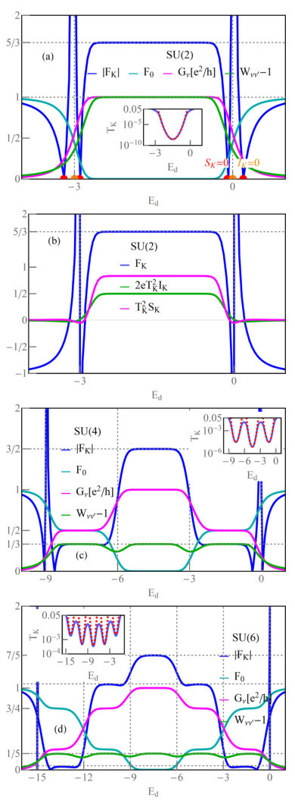
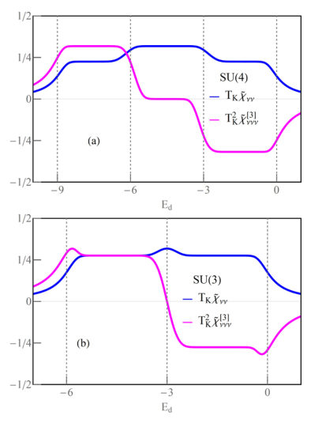

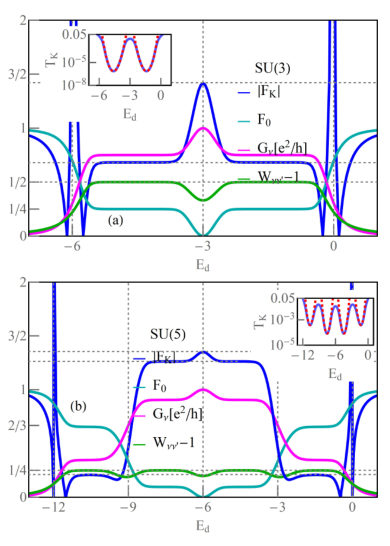
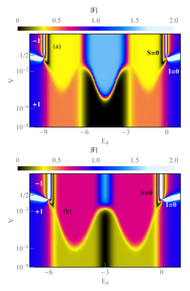
← Index · ← Previous · Next →
Authors: Dripto Biswas, Sougato Bose, Anupam Mazumdar, Marko Toroš
Type: theory · Category: other · PDF: https://arxiv.org/pdf/2606.09991v1
Analysis basis: full PDF text, analyzed in chunks
Topic relevance: 🔥 entanglement & information structure 4/5 · Keldysh / 2PI / non-Gaussian methods 2/5 · analog quantum simulation 2/5 · correlated cavity matter 1/5 · methods for driven-dissipative 1/5 · non-equilibrium dynamics 1/5 · quantum optics experiment 1/5
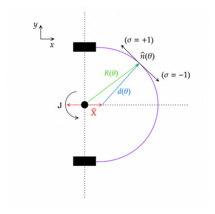
Summary. This theoretical paper explores how the quantum nature of gravity can be tested by measuring entanglement between a photon and a spinning mechanical rotor. The interaction is mediated by virtual gravitons, leading to corrections in the system's Hamiltonian proportional to the rotor's angular momentum $J$. The key prediction is that the difference in entanglement entropy for clockwise versus counter-clockwise light propagation directly measures this spin-dependent gravitational coupling.
Why it may be interesting. It bridges quantum information theory (entanglement measures) with fundamental physics (quantum gravity effects), providing concrete, measurable predictions based on rotational dynamics in an optomechanical setting.
Main problem. The paper investigates testing the quantum nature of gravity by calculating graviton-mediated entanglement between a photon and the spatial position of a quantum rotor.
Main result. The difference in linear entanglement entropies for prograde versus retrograde photon motion provides a measurable signature proportional to the rotor's angular momentum, $J$.
Method. The analysis uses quantum field theory techniques applied to an optomechanical setup, deriving effective Hamiltonians and calculating entanglement entropy using Gaussian approximations.
Model / system. The system is an optomechanical setup involving a photon mode (optical cavity) coupled to a mechanical oscillator (quantum rotor) via the exchange of virtual gravitons. The interaction strength depends on the rotor's angular momentum $J$.
Key observables. Gravitationally induced entanglement entropy, specifically the difference in linear entanglement entropies ($\Delta S$) for prograde and retrograde motion.
Important parameters / regimes. Angular momentum ($J$), coupling constants ($g_0$), mechanical frequency ($\omega_m$), and cavity field amplitude ($\alpha$).
Assumptions / limitations. The analysis assumes the semi-classical limit for $J$ (or treats it as a classical background) and focuses on leading order corrections linear in $J$. It also ignores decoherence effects.
Figures summary. Not specified by notes, but calculations involve deriving potentials ($V(d)$), coupling strengths ($g(J)_{0,\sigma}$), and entanglement entropy evolution over time ($ ext{Tr} ho_b^2(t)$).
Paper structure. The paper progresses from establishing the theoretical framework using off-shell graviton amplitudes, deriving effective potentials incorporating spin corrections, constructing a full Hamiltonian for the coupled system, and finally calculating the entanglement entropy difference as the key observable.
One of the key tests of the quantum nature of gravity is to test whether the virtual mediator of gravity between matter and photon gives rise to the quantum light-bending phenomenon. The off-shell degrees of freedom, involving the spin-2 and spin-0 components of graviton, reproduce the classical deviation of light rays, as well as have been predicted to generate entanglement between matter and photon. This paper explores the generation of entanglement due to the quantum gravitational interaction in an optomechanical setup with a quantum rotor and photon. The virtual exchange of a graviton provides entanglement between the photon degrees of freedom and the spatial position of the quantum rotor, with the rotational state affecting its magnitude. We analyze the case of a high spinning rotor, in an approximately classical state of angular momentum, and quantify its effect on the gravitationally induced entanglement between the photon and the position of the quantum rotor. We show that the difference in the linear entanglement entropies, of prograde-and-retrograde motion of the photon with respect to the quantum rotor, provide tangible observable consequences.
Authors: Young-Do Yoon, Chan Roh, Geunhee Gwak, Young-Sik Ra
Type: experiment · Category: quantum information and computing · PDF: https://arxiv.org/pdf/2606.10387v1
Analysis basis: full PDF text, analyzed in chunks
Topic relevance: 🔥 quantum optics experiment 4/5 · quantum measurements 3/5 · QC/QI experiment 1/5 · entanglement & information structure 1/5 · interference shaping light 1/5 · measurement-induced transitions 1/5
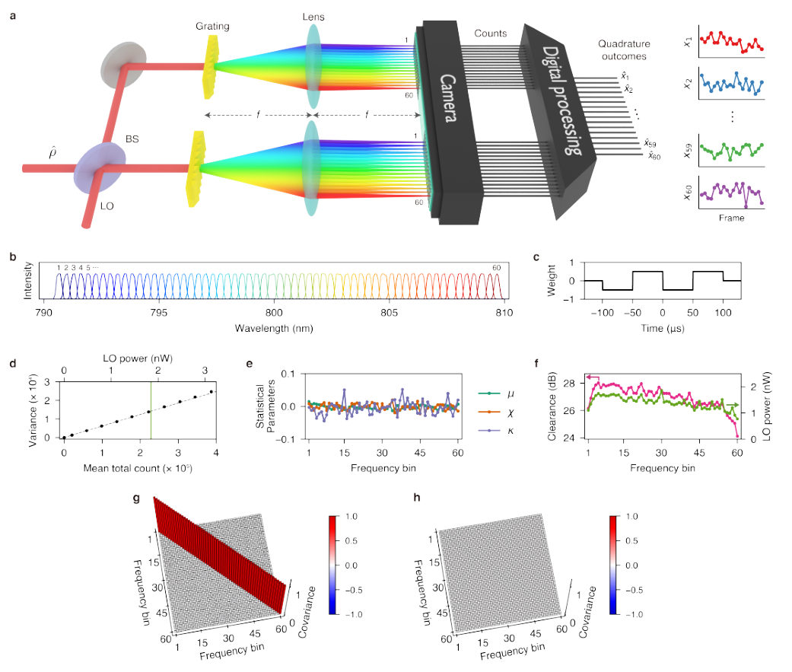
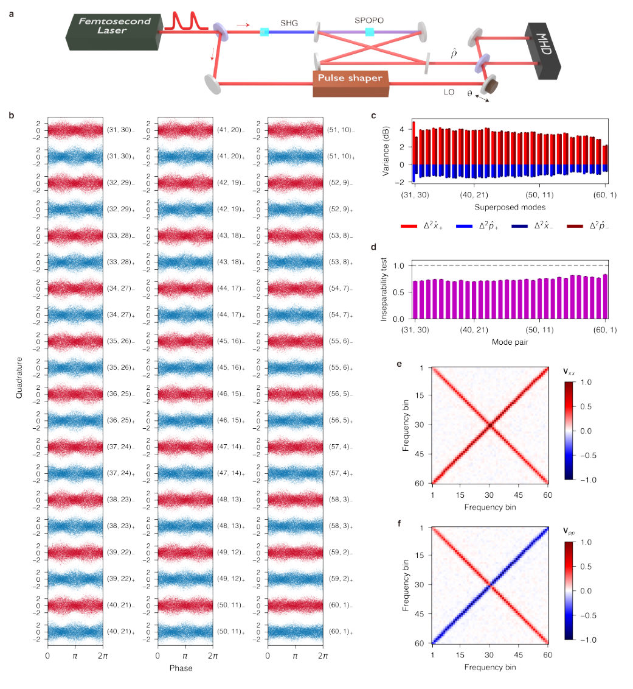
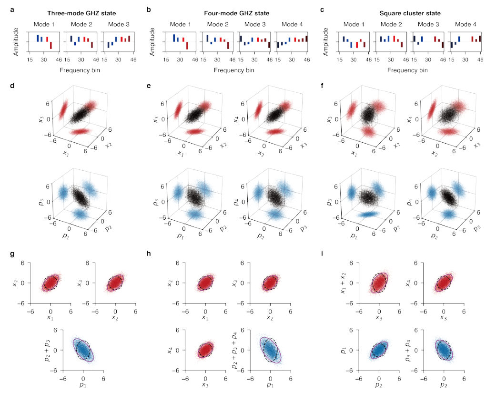
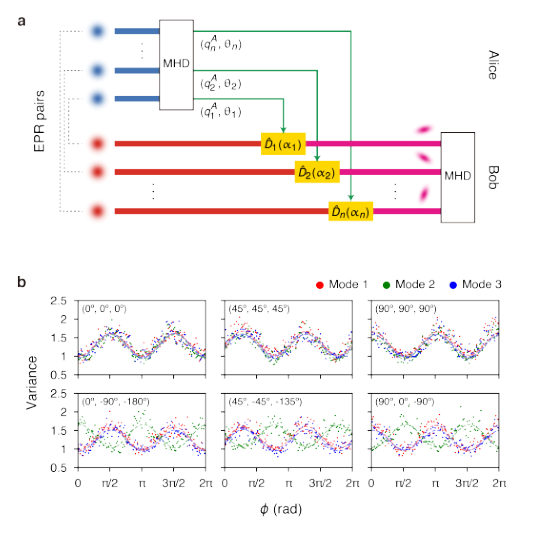
Summary. The paper presents a novel, camera-enabled homodyne detection technique to overcome the scalability limitations of measuring quantum light. By utilizing CCD arrays, they can simultaneously measure quadrature outcomes for dozens of optical modes using extremely low local oscillator power. This breakthrough enables direct experimental verification of entanglement and squeezing in large-scale multimode quantum states.
Why it may be interesting. This work provides a highly scalable experimental platform for quantum measurement that directly addresses a major bottleneck in realizing large-scale quantum information processing protocols like quantum error correction or complex quantum simulations.
Main problem. The primary challenge addressed is achieving scalable, efficient quantum measurement, specifically homodyne detection, necessary for large-scale quantum technologies.
Main result. The authors successfully demonstrated a camera-based system capable of simultaneously measuring quadrature outcomes for 60 optical modes with significantly reduced local oscillator power and negligible crosstalk.
Method. They leverage the pixel array of a CCD camera to perform weighted summations of photocurrents, enabling simultaneous measurement in a superposed mode basis without extra interferometers.
Model / system. The system uses a camera-coupled homodyne detector setup to measure quantum light generated by sources like SPOPOs. It is designed to handle multimode states and test entanglement criteria on these measured quadratures.
Key observables. Quadrature outcomes ($\hat{x}, \hat{p}$), squeezing variances, entanglement indicators (e.g., nullifier variances), and correlations in superposed modes.
Important parameters / regimes. Scalability to 60+ modes; nanowatt-level local oscillator power per mode (a six-order-of-magnitude reduction); clearance exceeding 24 dB.
Assumptions / limitations. The method assumes shot-noise-limited operation is achieved, and the low LO power is attributed to the CCD camera's readout characteristics.
Figures summary. Figures illustrate the camera-based detection scheme mapping modes to pixels, show noise measurements for superposed modes testing entanglement criteria (Duan criterion), and detail protocols for verifying multipartite entangled states like GHZ and cluster states.
Paper structure. The paper introduces the scalability problem in quantum measurement, details the novel camera-based homodyne setup, demonstrates its ability to measure nonclassical noise (squeezing/entanglement) in multimode light, and finally applies this technique to verify multipartite entanglement and perform conditional state preparation.
Scalability is a key challenge in advancing quantum technologies such as quantum computing, communication, and metrology. Photonic systems offer a promising route to scalability by enabling the deterministic generation of large-scale entangled states. Homodyne detection is an essential quantum measurement to exploit such entangled states, enabling quantum-enhanced measurement, deterministic quantum teleportation, GKP-state breeding, and quantum error correction. Despite the recent progress in generating large-scale quantum states, realizing quantum measurement at scale remains a major challenge. Here we realize scalable and efficient homodyne detection by leveraging a large number of pixels in a charge-coupled-device (CCD) camera. Our approach enables shot-noise-limited quadrature measurements of 60 optical modes simultaneously, while requiring only nanowatt-level local oscillator power per mode -- a six-order-of-magnitude reduction compared to conventional methods. The system achieves clearance exceeding 24 dB for all modes with negligible crosstalk. We demonstrate its compatibility with a large-scale quantum state by directly observing squeezing and entanglement in 60 optical modes. Furthermore, we showcase applications in verifying multipartite entanglement and in the conditional preparation of multimode states. This work provides a scalable method for quantum measurement, paving the way for large-scale quantum information processing.
Authors: Julia Wildeboer, Zohar Nussinov, Thomas Iadecola, Alexander Seidel
Type: theory · Category: strongly correlated electrons · PDF: https://arxiv.org/pdf/2606.10003v1
Analysis basis: full PDF text, analyzed in chunks
Topic relevance: 🔥 analog quantum simulation 4/5 · exotic spin models in light-matter 3/5 · entanglement & information structure 2/5
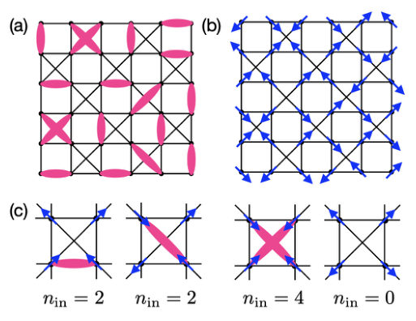
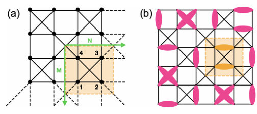
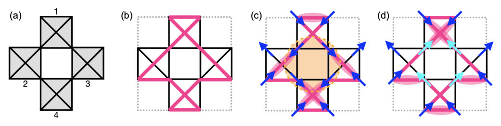
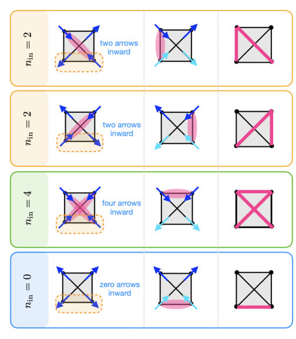
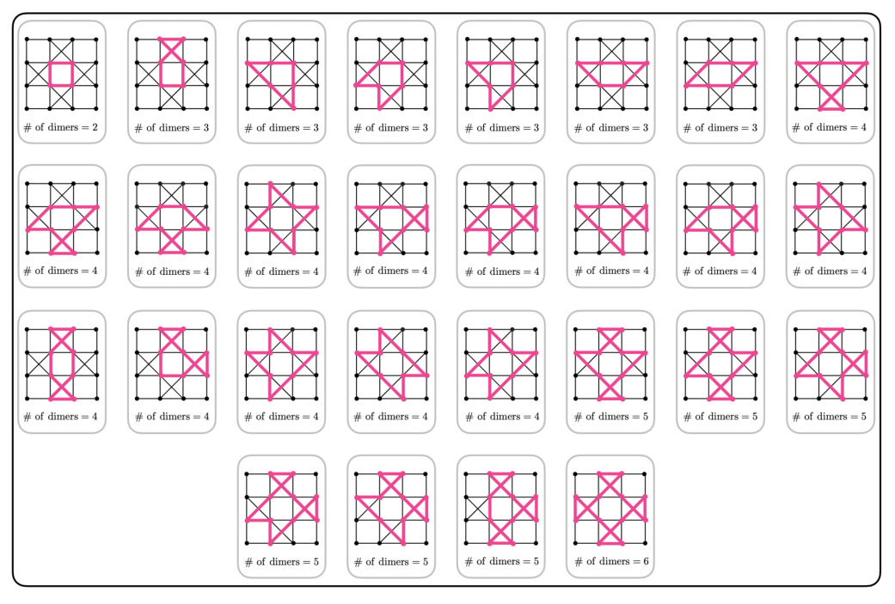
Summary. This work develops an advanced theoretical framework for exactly solvable quantum dimer models on non-planar lattices like the checkerboard and ruby. By mapping these systems onto $\mathbb{Z}_2$ lattice gauge theories, the authors confirm their robust topological nature, calculating key observables like entanglement entropy and torus partition functions.
Why it may be interesting. The explicit mapping of a dimer model Hamiltonian onto a pure-flux $\mathbb{Z}_2$ lattice gauge theory provides concrete, solvable examples of topological order relevant to frustrated magnetism and quantum spin liquids.
Main problem. The research generalizes exactly solvable quantum dimer models from planar (trivalent) to non-planar (tetravalent) parent lattices, extending the study of $\mathbb{Z}_2$ topological phases.
Main result. They establish a broad framework for crossed-medial quantum dimer models on lattices like the checkerboard and ruby lattice, showing they map exactly onto $\mathbb{Z}_2$ gauge theories (like the Toric Code).
Method. The authors employ generalized Kasteleyn methods and an 'arrow formalism' to construct and analyze the Hamiltonians for these non-planar systems.
Model / system. The system is a Quantum Dimer Model (QDM) defined on crossed-medial lattices, which are dual to Ising Gauge Theories. The model exhibits $\mathbb{Z}_2$ topological order, characterized by deconfined vison excitations.
Key observables. Topological Entanglement Entropy (TEE), torus partition function ($Z_{\text{torus}}$), and the energy gap for vison pair creation ($E_{\Delta} = 4\gamma$).
Important parameters / regimes. Link weights ($x, y, z$) and lattice geometry parameters defining planarity vs. crossed plaquettes.
Assumptions / limitations. The analysis relies on extending Kasteleyn methods to non-planar graphs and assuming specific isotropic weight limits for closed-form solutions.
Figures summary. Figures illustrate the local constraints (e.g., forbidden parallel dimers) and provide diagrams detailing the arrow representation, resonance moves, and the underlying square lattice structure used for gauge theory mapping.
Paper structure. The paper progresses by first establishing the generalized framework on crossed-medial lattices, then applying it to the checkerboard lattice to show equivalence with the Toric Code via an arrow formalism. It concludes by calculating exact torus partition functions and TEE, confirming the $\mathbb{Z}_2$ topological nature.
We generalize an influential framework for exactly solvable quantum dimer models with dual Ising gauge theory descriptions realizing the $\mathbb{Z}_{2}$ topological phase from trivalent to tetravalent parent lattices. The resulting quantum dimer models live on crossed-medial lattices and possess the remarkable feature of having crossed plaquettes, leading to transition graphs with generically intersecting loops. This non-planar structure runs counter to established templates for analytically tractable dimer liquids. As the simplest realization of the construction, we introduce an exactly solvable quantum dimer model on the checkerboard lattice that allows an exact mapping to the toric code, thus providing a particularly direct connection between the latter and Anderson's short range resonating valence bond paradigm. We further show that a corresponding crossed ruby lattice construction, dual to an Ising gauge theory on the kagome lattice, naturally falls within the same framework. More generally, the construction gives rise to a broad class of exactly solvable crossed-medial quantum dimer models and admits natural iteration, generating cascades of solvable $\mathbb{Z}_{2}$ topological dimer liquids beyond the standard planar setting. We furthermore extend Kasteleyn methods to the relevant non-planar graphs, enabling controlled wave-function deformations away from the commuting-projector points while retaining efficient evaluation of correlation functions.
Authors: Damian Krychowski, Stanisław Lipiński
Type: theory · Category: strongly correlated electrons · PDF: https://arxiv.org/pdf/2606.10814v1
Analysis basis: full PDF text, analyzed in chunks
Topic relevance: 🔥 Kondo & dissipative impurity 4/5 · Keldysh / 2PI / non-Gaussian methods 3/5 · methods for driven-dissipative 1/5 · non-equilibrium dynamics 1/5




Summary. This paper theoretically analyzes the transport properties, especially nonlinear shot noise, in an SU(N) Kondo system using a sophisticated combination of Slave Boson Mean Field Theory and Fermi Liquid theory. It shows how higher-order correlation functions, beyond simple two-body terms, become essential for accurately describing current fluctuations away from equilibrium. The results advance the understanding of correlated electron physics in quantum dots by predicting measurable fractional noise signatures.
Why it may be interesting. This work provides advanced theoretical tools (FLT extensions to slave bosons) to calculate non-equilibrium quantum noise signatures that are highly sensitive indicators of strong electronic correlations and symmetry structure.
Main problem. The paper investigates transport properties, including nonlinear conductance and fractional shot noise, in an SU(N) Kondo system operating in the strong coupling regime.
Main result. It demonstrates that while linear noise is captured by mean-field approaches, accurate description of nonlinear noise requires incorporating three-body correlation functions when far from electron-hole symmetry.
Method. The analysis combines the Kotliar-Ruckentein slave boson approach (SBMFA) with Fermi Liquid Theory (FLT) to calculate higher-order corrections beyond mean-field approximations.
Model / system. The system is a multi-level interacting quantum dot (N-QD) modeled by an N-level Anderson Hamiltonian, analyzed for SU(N) symmetries up to N=6.
Key observables. Linear and nonlinear conductance, susceptibilities ($\chi^{(2)}, \chi^{[3]}$), and fractional shot noise ($S$).
Important parameters / regimes. Kondo temperature ($T_K$), degeneracy $N$, bias voltage ($V$), and Coulomb interaction strength ($U$).
Assumptions / limitations. The analysis relies on extending the SBMFA by incorporating Fermi liquid corrections, which is necessary because the basic SBMFA neglects crucial fluctuations.
Figures summary. Figures illustrate slave boson amplitudes and fluctuation parameters ($\delta E_ u$) as a function of bias voltage ($V$), and show how generalized Wilson ratios characterize correlation strengths.
Paper structure. The paper progresses from establishing the SBMFA framework for linear response, to applying FLT corrections for nonlinear transport, culminating in explicit formulas for shot noise dependent on higher-order correlations.
We consider transport through a multi-level interacting quantum dot (N-QD) in Kondo regime. Using the Kotliar-Ruckentein slave boson approach (SBMFA) for N-level Anderson model we define effectively noninteracting quasiparticles of the SU(N) Kondo system ($N=2,3,4,5,6$). Kondo resonance transmission coefficients determine linear noise describing quasiparticle partitioning. To discuss nonlinear conductance, susceptibilities and shot noise in the strong coupling regime, we apply Fermi liquid theory with parameters expressed by susceptibilities of pseudofermions determined within SBMFA. Nonlinear shot noise is dominated by two-quasiparticle scattering. However, we demonstrate that for occupation regions distant from the electron-hole symmetry point, the role of three-body correlations must be revealed.
Authors: Raghav G. Jha, Goksu C. Toga, Jaber I. Taher, Bojko N. Bakalov, Alexander F. Kemper
Type: theory · Category: quantum information and computing · PDF: https://arxiv.org/pdf/2606.09971v1
Analysis basis: full PDF text, analyzed in chunks
Topic relevance: 🔥 entanglement & information structure 4/5 · analog quantum simulation 3/5 · methods for driven-dissipative 1/5 · non-equilibrium dynamics 1/5
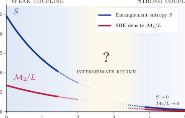
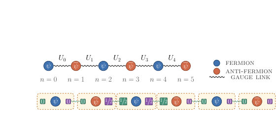
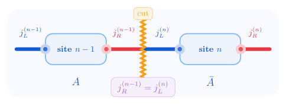
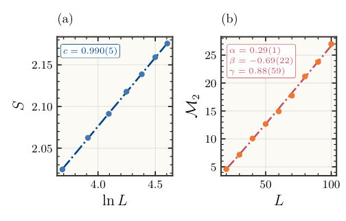
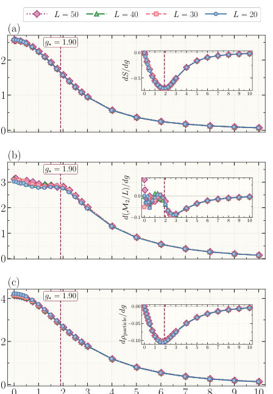
Summary. This work investigates how two distinct measures of quantum complexity—entanglement and non-stabilizerness ('magic')—behave in the SU(2) lattice gauge theory. By calculating these quantities using tensor networks, the authors identify a crossover point where entanglement and magic decouple as the system moves from a critical state towards confinement. This provides theoretical insight into how quantum correlations are suppressed in physical gauge theories.
Why it may be interesting. The explicit calculation of 'magic' (non-stabilizerness) alongside standard entanglement entropy provides a deeper diagnostic tool for characterizing quantum resources relevant to fault-tolerant quantum computation in strongly interacting systems.
Main problem. The study aims to understand the interplay between entanglement (non-local correlations) and non-stabilizerness ('magic') in quantum field theories to pinpoint regimes where quantum advantage might emerge.
Main result. A clear decoupling of entanglement entropy and magic is observed across the confinement crossover in the SU(2) lattice gauge theory, suggesting different physical mechanisms suppress these two measures of quantum complexity.
Method. The authors calculate gauge-invariant entanglement entropy and stabilizer Rényi entropy using tensor networks on a dressed-site basis that enforces Gauss's law exactly.
Model / system. The system is the (1+1)-dimensional SU(2) lattice gauge theory with matter fields, analyzed in various coupling regimes ($g$ and $m$). The Hamiltonian is formulated in an effective irrep-truncated dressed-site basis.
Key observables. Gauge-invariant entanglement entropy ($S$), stabilizer Rényi entropy ($\mathcal{M}_n$), particle density ($ ho_{ ext{particle}}$), and anti-flatness ($ ext{A}_{ ext{F}}$).
Important parameters / regimes. Coupling constants $g$ and $m$; the crossover coupling $g^\star$; system size $L$.
Assumptions / limitations. The analysis relies on restricting the Hilbert space to physical states satisfying local Gauss's law within an irrep-truncated basis, and utilizing tensor network methods for large systems.
Figures summary. Figures illustrate how entanglement entropy components decompose ($S = S_{ ext{classical}} + S_{ ext{quantum}} + S_{ ext{edge}}$) and map out the behavior of $S$, $\mathcal{M}_2/L$, and $ ho_{ ext{particle}}$ across the coupling plane, highlighting the crossover point $g^\star$.
Paper structure. The paper first establishes the physical model using a dressed-site basis to enforce Gauss's law. It then calculates key diagnostics like entanglement entropy and stabilizer Rényi entropy. Finally, it analyzes how these measures behave across different coupling regimes, identifying the crossover point $g^\star$ where the interplay between magic and entanglement changes.
Entanglement and non-stabilizerness (magic) quantify two distinct departures of quantum systems from classical description: the former measures non-local correlations, while the latter measures the deviation from stabilizer states that can be efficiently simulated classically. Understanding magic in physically relevant quantum field theories is essential for identifying where quantum advantage may be realized in the early fault-tolerant quantum computing era. We calculate the gauge-invariant entanglement entropy and stabilizer Rényi entropy of the ground state of the (1+1)-dimensional SU(2) lattice gauge theory formulated in a dressed-site basis that enforces Gauss's law exactly. Using tensor networks, we obtain results for system sizes up to $L=100$ (300 qubits). We find a crossover denoted by $g_{\star}$ where the ground state passes from a more magic-rich regime into a regime with less magic; this is also tracked by the sharpest change of both the entanglement entropy and lattice particle density. Our large-scale study of non-stabilizerness and entanglement entropy in a non-Abelian lattice gauge theory with matter provides new insight into the interplay of magic and entanglement in gauge theories, both of which are relevant for classical and early fault-tolerant quantum simulations.
Authors: Jaesung Lim, Yonggi Jo, Nam Hun Park, Zaeill Kim, Yong Sup Ihn
Type: experiment · Category: quantum information and computing · PDF: https://arxiv.org/pdf/2606.10306v1
Analysis basis: full PDF text, analyzed in chunks
Topic relevance: 🔥 quantum optics experiment 4/5 · interference shaping light 3/5 · QC/QI experiment 1/5 · quantum measurements 1/5
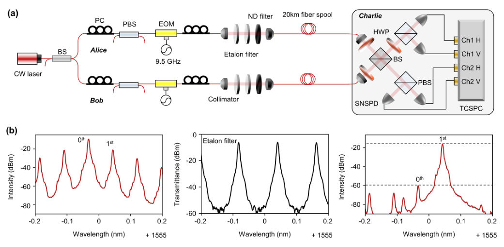
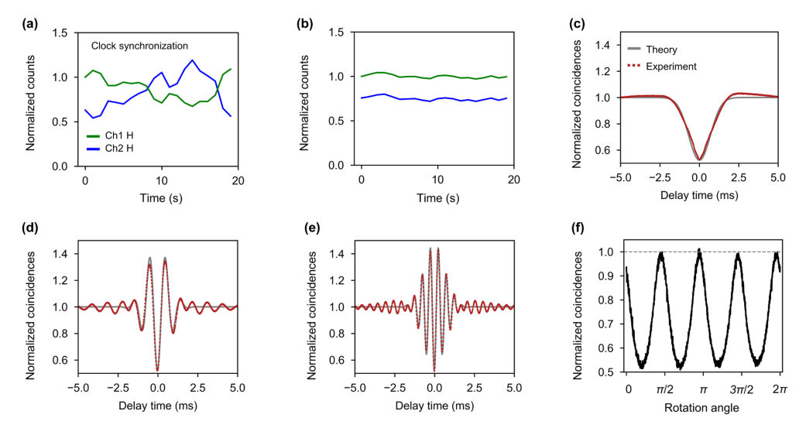
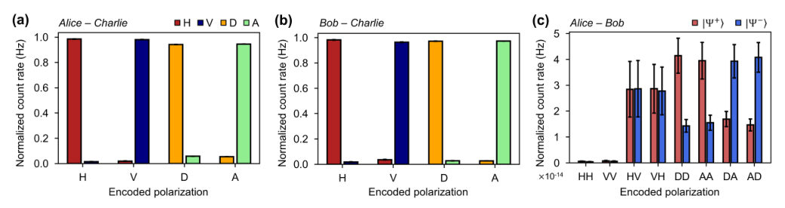
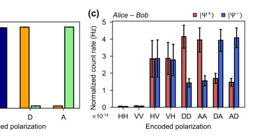
Summary. The paper introduces a reconfigurable Quantum Key Distribution (QKD) platform that uses electro-optic modulation on a single laser source to operate over 20 km of fiber. It successfully demonstrates high photon indistinguishability necessary for quantum interference, while also proving the ability to switch between MDI-QKD and BB84 protocols by adjusting only one half-wave plate. This significantly enhances hardware efficiency for future quantum networks.
Why it may be interesting. This work is highly relevant to quantum optics and photonic QI as it presents a practical engineering solution for building versatile quantum communication hardware using established components like EOMs and CW lasers.
Main problem. The primary goal was developing a practical, reconfigurable quantum key distribution (QKD) platform capable of switching between MDI-QKD and BB84 protocols using shared hardware to minimize system redundancy.
Main result. The authors demonstrated high indistinguishability ($V \approx 0.5$) over 20 km channels and achieved seamless reconfiguration between MDI-QKD and BB84 modes by rotating a single half-wave plate, confirming robust operational flexibility.
Method. The system utilized electro-optic modulation (EOM) on a shared CW laser to generate two mutually phase-randomized weak coherent states. Performance was characterized using time-resolved Hong–Ou–Mandel (HOM) interference and by measuring Quantum Bit Error Rates (QBERs) in both protocols.
Model / system. The platform is an EOM-based QKD system operating over 20 km optical fiber, designed to support both MDI-QKD (via partial Bell-state measurement) and BB84. Reconfigurability is achieved by manipulating a single Half-Wave Plate (HWP) in the central module.
Key observables. HOM interference visibility ($V$), Mutual Coherence Time ($ ext{T}_c$), Quantum Bit Error Rates (QBERs) for both MDI-QKD and BB84.
Important parameters / regimes. 20 km optical channel length; Visibility approaching the classical limit of 0.5; HWP rotation angle of $22.5^\circ$ for mode switching.
Assumptions / limitations. The security during protocol switching relies on using a physical beam block to obstruct unused channels in BB84 mode.
Figures summary. Figures illustrate the optical architecture, spectral filtering performance (sideband isolation), time-resolved TPI histograms confirming indistinguishability across detunings, and comparisons of QKD count rates across different modes.
Paper structure. The paper details the hardware setup using EOMs for state generation, validates channel indistinguishability via HOM interference measurements, demonstrates MDI-QKD implementation through partial BSM, and concludes by showing the simple reconfiguration to BB84 mode.
Measurement-device-independent quantum key distribution (MDI-QKD) is designed to eliminate detector side-channel vulnerabilities. However, its practical deployment remains experimentally demanding because it requires two-photon interference (TPI) between mutually phase-randomized optical states. In this study, we demonstrate a reconfigurable platform that supports both polarization encoded MDI-QKD and BB84 measurements utilizing the same optical hardware over 20 km optical fiber channels. Two mutually phase-randomized weak coherent states (WCSs) are generated from a shared continuous-wave (CW) laser via electro-optic phase modulation and subsequent etalon-based first-order sideband filtering. Channel indistinguishability is verified through Hong-Ou-Mandel (HOM) interference, combining time-resolved coincidence measurements and polarization mismatch scans, confirming a high degree of indistinguishability that robustly approaches the classical upper limit of 0.5 for WCSs. The transmitted states go through partial Bell-state measurement (BSM) to implement MDI-QKD. Here, the sytem can be directly reconfigured for BB84 simply by rotatinga single half-wave plate (HWP) by 22.5 degree in one arm of the module. This seamless reconfiguration drastically reduces hardware redundancy and enhances operational flexibility in dynamic network environments. These results indicate that EOM-based frequency engineering using a shared CW laser offers a highly practical route toward scalable and reconfigurable quantum communication systems.
Authors: Shota Yokoyama, Atsushi Sakaguchi, Jun-ichi Yoshikawa, Hironari Nagayoshi, Warit Asavanant, Kan Takase, Takuji Hiraoka, Akira Furusawa, Hidehiro Yonezawa
Type: experiment · Category: quantum information and computing · PDF: https://arxiv.org/pdf/2606.10432v1
Analysis basis: full PDF text, analyzed in chunks
Topic relevance: 🔥 QC/QI experiment 4/5 · analog quantum simulation 2/5 · quantum measurements 1/5 · quantum optics experiment 1/5
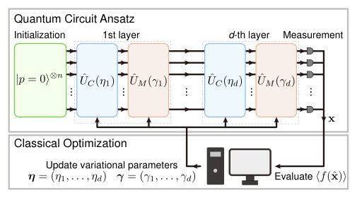
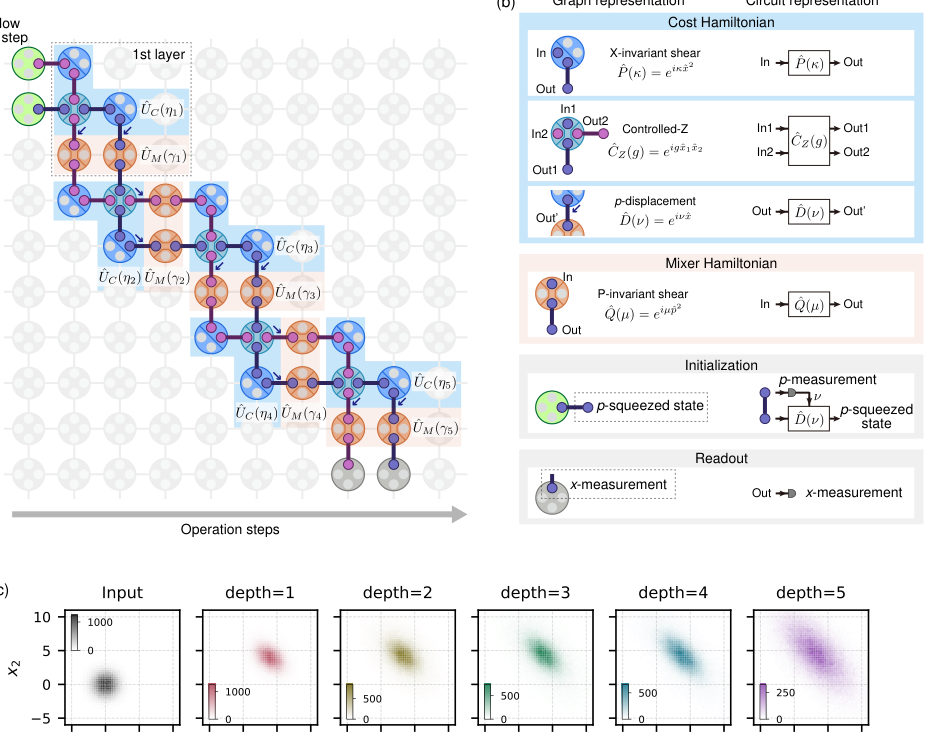
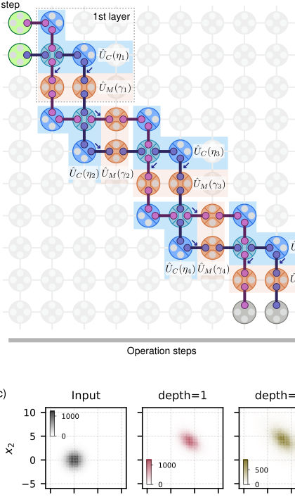
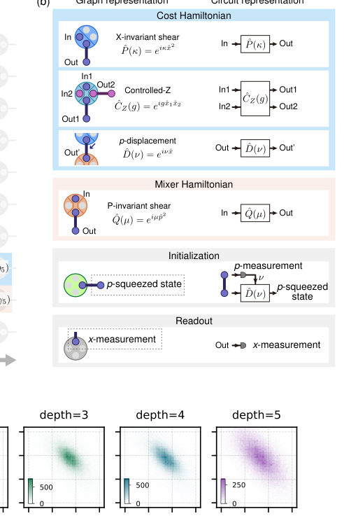
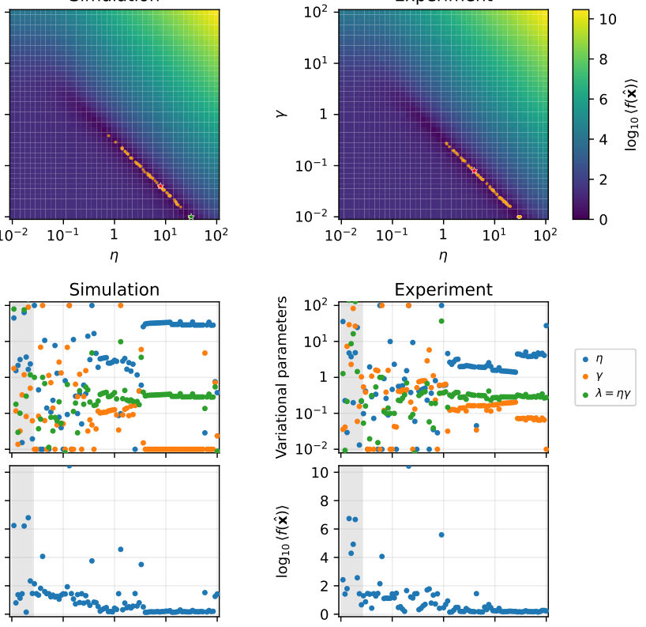
Summary. The research experimentally implements CV-QAOA on a programmable continuous-variable quantum computer utilizing a quad-rail lattice cluster state. By mapping quadratic cost functions onto this architecture, they demonstrate parameter optimization using Bayesian methods. The findings establish the feasibility of the algorithm while attributing observed performance plateaus to noise and classical optimization hurdles rather than fundamental algorithmic limits.
Why it may be interesting. This work provides a concrete experimental realization of a variational quantum algorithm (CV-QAOA) on a photonic/continuous-variable platform, advancing the practical demonstration of quantum computation beyond simple proof-of-concept measurements.
Main problem. The paper experimentally demonstrates the Continuous-Variable Quantum Approximate Optimization Algorithm (CV-QAOA) for solving multi-variable quadratic optimization problems.
Main result. While increasing QAOA depth improves performance from $d=1$ to $d=2$, further increases show limited gains, suggesting experimental limitations are due to noise and classical optimization challenges rather than algorithmic failure.
Method. The authors use Bayesian Optimization (BO) to tune variational parameters ($\eta, \gamma$) while implementing the CV-QAOA ansatz on a programmable platform.
Model / system. The system is a continuous-variable quantum computing platform based on a quad-rail lattice (QRL) cluster state, enabling Measurement-Based Quantum Computing (MBQC). The algorithm maps quadratic cost functions onto this architecture using Gaussian operations.
Key observables. Optimized cost values ($\log_{10}\langle f(\hat{\mathbf{x}}) angle$), performance vs. QAOA depth ($d$), and the mean/covariance of output quadratures.
Important parameters / regimes. QAOA depth ($d$), resource squeezing level (e.g., -4.5 dB), problem dimension (up to 100 modes).
Assumptions / limitations. Experimental limitations are attributed primarily to noise accumulation and classical optimization challenges, contrasting with ideal numerical simulations which show continued improvement with depth.
Figures summary. Figures illustrate the CV-QAOA schematic, mapping onto the QRL structure, showing performance vs. depth for varying squeezing levels, and comparing experimental results against idealized infinite-shot simulations.
Paper structure. The paper systematically introduces the CV-QAOA framework on the QRL platform, details the Hamiltonian decomposition into Gaussian operations, presents optimization using BO, and concludes by comparing finite-shot experimental performance to ideal theoretical limits.
We experimentally demonstrate the continuous-variable quantum approximate optimization algorithm (CV-QAOA) for multi-variable problems and multiple QAOA depths using a measurement-based CV quantum computing platform on a quad-rail lattice (QRL) cluster state. We propose a systematic method to map arbitrary quadratic cost functions onto the QRL architecture and examine the resulting construction in settings involving up to 100 modes. Using the programmable platform, we prepare the CV-QAOA ansatz and optimize the variational parameters via Bayesian optimization. We then investigate the performance on quadratic optimization problems and observe that increasing the depth from 1 to 2 improves performance, whereas further increases yield only limited gains. In contrast, numerical simulations under idealized conditions, assuming an infinite number of measurement shots and gradient-based optimization, indicate that the performance of CV-QAOA can improve with increasing depth, suggesting that the experimentally observed limitations primarily arise from noise accumulation and classical optimization challenges. This work provides an experimental demonstration of CV-QAOA on a programmable CV platform and establishes a foundation for future developments of variational quantum algorithms in CV systems.
Authors: Zhaoyi Li, Qinchen Duan, Bo Wen, Ruidan Zhong, Shu Guo
Type: experiment · Category: strongly correlated electrons · PDF: https://arxiv.org/pdf/2606.10980v1
Analysis basis: full PDF text, analyzed in chunks
Topic relevance: 🔥 analog quantum simulation 4/5 · exotic spin models in light-matter 3/5 · spintronics-quantum-optics interface 1/5
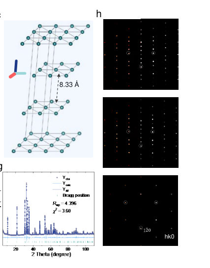
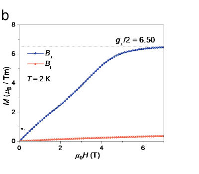
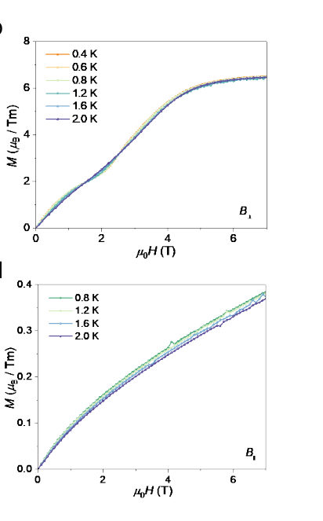
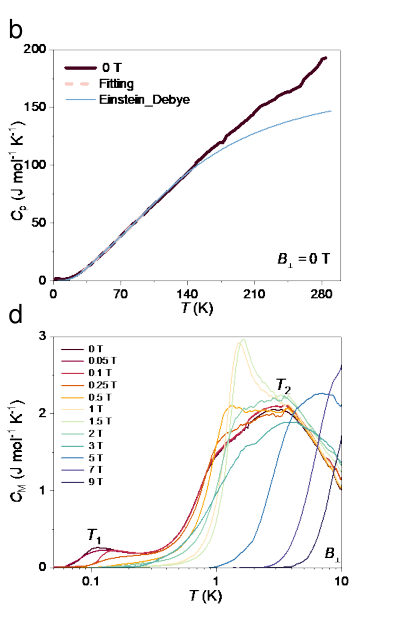
Summary. The authors synthesized and characterized $ ext{TmZnGaO}_4$, a triangular lattice antiferromagnet. They found strong magnetic anisotropy and observed a characteristic one-third magnetization plateau under an applied field, suggesting a specific spin ordering ($\uparrow\uparrow\downarrow$). Furthermore, low-temperature specific heat measurements reveal distinct anomalies, confirming the presence of complex, frustrated quantum spin dynamics in this material.
Why it may be interesting. This work provides direct experimental evidence on how geometric frustration interacts with crystal field effects in a non-Kramers system, leading to exotic, field-tunable magnetic ground states relevant to modern strongly correlated electron physics.
Main problem. The study investigates exotic quantum spin states and frustrated magnetism within a non-Kramers triangular antiferromagnet.
Main result. The material exhibits strong magnetic anisotropy, clear evidence of field-induced one-third magnetization plateaus suggesting an up-up-down spin configuration, and specific heat anomalies pointing to complex low-temperature quantum fluctuations.
Method. Measurements include single crystal synthesis, magnetic susceptibility ($\chi$), magnetization ($M-H$) under various fields, and zero-field/field-dependent specific heat ($C_p$).
Model / system. The system is $ ext{TmZnGaO}_4$, a layered triangular lattice (TL) antiferromagnet where the magnetic moments reside on non-Kramers $ ext{Tm}^{3+}$ ions. The physics is governed by strong easy-$c$-axis anisotropy and geometric frustration.
Key observables. One-third magnetization plateau ($\sim 1.65 ext{ T}$), specific heat anomalies at $0.11 ext{ K}$ and $2.81 ext{ K}$, magnetic entropy ($S_M$), and power-law decay in differential susceptibility ($dM/dH$).
Important parameters / regimes. Low temperatures (down to 50 mK), strong anisotropy ratio ($\approx 10$), and the presence of a triangular lattice geometry.
Assumptions / limitations. The analysis requires subtracting phonon contributions from total specific heat data, and some measurements rely on fitting models like Curie-Weiss law or Debye/Einstein models for extrapolation.
Figures summary. Figures show crystal structure details, magnetic susceptibility vs. T (anisotropy), $M(H)$ curves revealing plateaus, and $C_p(T)/S_M$ plots detailing anomalies under varying fields.
Paper structure. The paper follows a standard experimental structure: structural characterization is presented first, followed by measurements of magnetic susceptibility and magnetization to establish anisotropy and field-induced phases. Finally, specific heat and entropy measurements probe the underlying quantum spin fluctuations at very low temperatures.
A previously unreported triangular lattice (TL) antiferromagnet, TmZnGaO4, was synthesized as single crystals, and its crystal structure, magnetic susceptibilities, and specific heat were reported. Its crystal structure is isomorphic to that of the transverse-field Ising antiferromagnet TmMgGaO4, with Tm3+ ions located in the TLs, separated by a nonmagnetic bilayer composed mainly of Ga3+ and Zn2+ ions. The magnetic susceptibilities indicate the dominating antiferromagnetic interactions. The magnetization curves (M-H) exhibit strong easy-c-axis anisotropy, with a clear one-third magnetic plateau emerging, consistent with a field-induced up-up-down spin configuration. Instead of forming a conventional long-range magnetic order, the system exhibits two broad anomalies at 0.11 K and 2.81 K in zero-field specific heat measurements, highlighting the persistence of strong spin fluctuations and the potential for exotic quantum spin states. The above results reveal its future interest in exploring exotic quantum spin states in TmZnGaO4.
Authors: Deepika Bhargava, Arijit Chatterjee, Vishal Varma, T. S. Mahesh
Type: experiment · Category: quantum information and computing · PDF: https://arxiv.org/pdf/2606.10744v1
Analysis basis: full PDF text, analyzed in chunks
Topic relevance: 🔥 QC/QI experiment 4/5 · correlated / nonlocal dissipation 1/5 · driven-dissipative phase transition 1/5 · entanglement & information structure 1/5 · methods for driven-dissipative 1/5
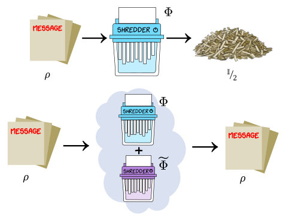
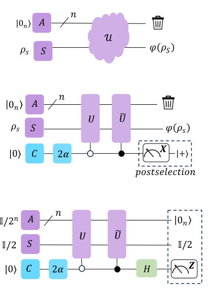
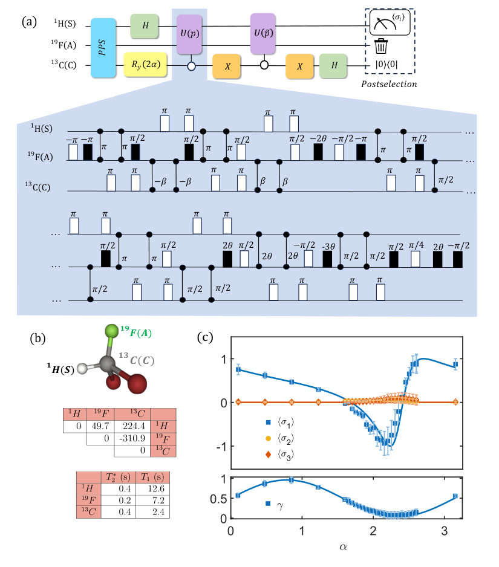
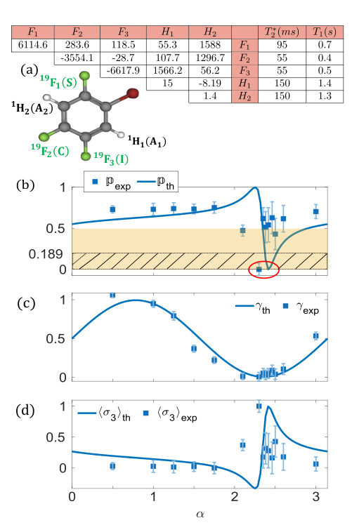
Summary. This paper demonstrates a novel technique to combat quantum noise by superposing multiple noisy quantum channels. Using NMR spectroscopy on multi-qubit registers, the authors experimentally achieved the recovery of quantum coherence and demonstrated 'superactivation' of quantum capacity when combining zero-capacity noise sources. This work validates coherent control methods for enhancing quantum information processing capabilities.
Why it may be interesting. This work provides a concrete, experimentally validated platform (NMR) for implementing advanced quantum information protocols—specifically noise mitigation via channel superposition—which is highly relevant to open quantum systems research.
Main problem. The research addresses how noise degrades quantum resources by proposing a method to cancel these detrimental effects through the superposition of noisy quantum channels.
Main result. The authors successfully demonstrated the cancellation of two dephasing channels using NMR and achieved 'superactivation' of quantum capacity by superposing two zero-capacity depolarizing channels in a five-qubit NMR setup.
Method. They theoretically derived conditions for valid channel superposition using Stinespring dilations, which was then experimentally realized using controlled unitary operations on multi-qubit Nuclear Magnetic Resonance (NMR) registers.
Model / system. The system involves quantum channels modeled via Pauli maps and implemented experimentally on NMR registers of varying sizes (3-qubit for dephasing, 5-qubit for depolarization). The control mechanism relies on superposing Stinespring dilation unitaries acting on an ancillary qubit.
Key observables. Quantum coherence recovery ($\langle\sigma_i angle$ expectation values), normalization factor ($\gamma$), effective error probabilities ($p'_i$), and the quantum capacity of the resulting channel.
Important parameters / regimes. The superposition parameter $\alpha$, which controls the mixture between the two channels, is crucial for observing interference effects.
Assumptions / limitations. The analysis assumes ancillary qubits are initialized in pure states ($ ho_A = |0_n angle\langle 0_n|_A$) for simplicity, although extensions to mixed states are possible.
Figures summary. Figures illustrate the quantum circuits used for superposition (using control qubits and postselection) and plot key observables like $\langle\sigma_i angle$, normalization factor $\gamma$, and effective channel strength $p$ as a function of the superposition parameter $\alpha$.
Paper structure. The paper progresses from theoretical derivation of valid superposed channels to analyzing specific cases (dephasing, depolarizing). It then details the experimental realization using NMR for both coherence recovery and capacity enhancement.
Noisy quantum channels degrade quantum resources such as coherence and entanglement and hence pose challenges for realizing quantum technologies. Coherent control of noisy channels allows us to minimize their effects on the quantum system. Here we achieve the cancellation of two noisy quantum channels by superposing their corresponding Stinespring dilation unitaries. We first arrive at conditions under which superposition of channels results in a valid quantum channel. We then consider superposing two dephasing channels and observe their destructive interference, thereby effectively recovering the quantum coherence. On superposing two zero-capacity depolarizing channels, we show superactivation of quantum capacity. We experimentally realize the cancellation of two dephasing channels using a three-qubit NMR register. Furthermore, using a five-qubit NMR register, we realize the cancellation of two depolarization channels and demonstrate superactivation of quantum capacity.
Authors: Mohammad Kashfi Haghighi
Type: both · Category: quantum information and computing · PDF: https://arxiv.org/pdf/2606.10098v1
Analysis basis: full PDF text, analyzed in chunks
Topic relevance: 🔥 QC/QI experiment 4/5 · methods for driven-dissipative 1/5 · non-equilibrium dynamics 1/5
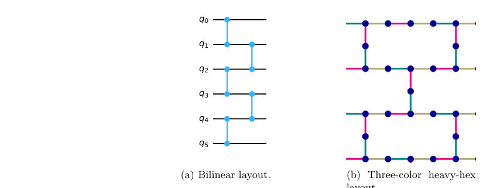
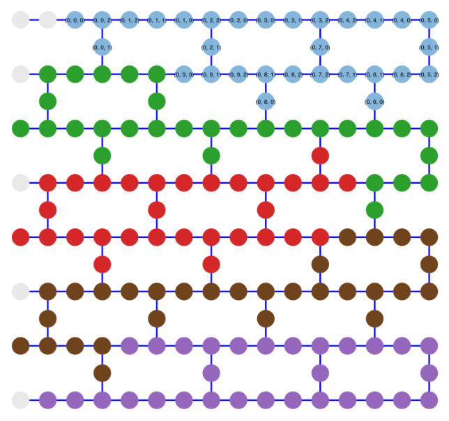
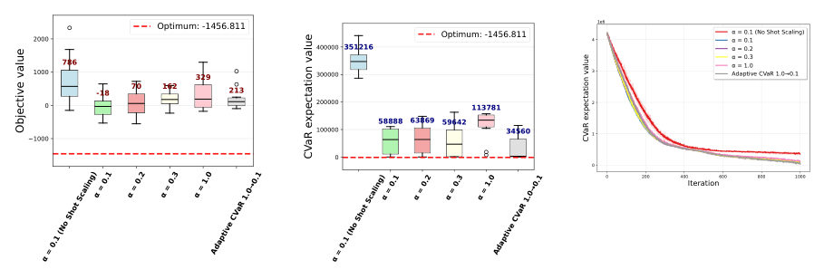
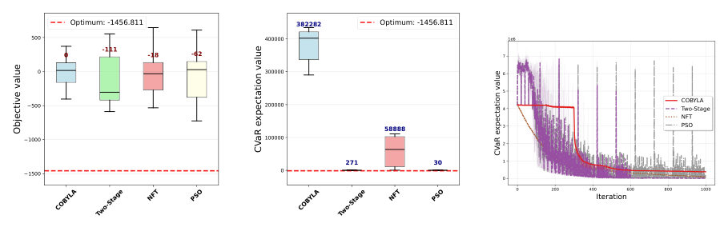
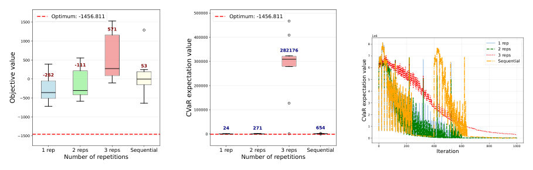
Summary. This work applies Variational Quantum Algorithms to solve dynamic portfolio optimization problems. It systematically investigates how crucial design choices—including adaptive sampling strategies, multi-stage classical optimization, and hardware-aware ansatz layouts (like HNDC)—impact performance on real quantum processors. The results guide the development of practical VQA protocols for near-term quantum devices.
Why it may be interesting. While focused on finance, the core methodology—designing quantum circuits to respect underlying hardware connectivity while maximizing computational depth/expressivity—is directly relevant to developing algorithms for complex many-body Hamiltonians in AMO physics.
Main problem. The paper addresses dynamic portfolio optimization (DPO), a complex multi-period financial problem, by mapping it onto a Variational Quantum Algorithm (VQA) framework.
Main result. The proposed Heavy-Hex Native Deep-Chain (HNDC) ansatz layout achieved the best performance on the physical QPU compared to other hardware-aware layouts. The study provides practical guidance for improving VQA performance despite not achieving quantum advantage over classical solvers.
Method. It employs a sampling-based VQA approach using Conditional Value-at-Risk (CVaR) estimation, combined with an adaptive two-stage classical optimization schedule (PSO $ o$ NFT).
Model / system. The model is a 150-qubit DPO instance. The physical platform involves superconducting qubits, specifically tested on the ibm quebec QPU, requiring careful consideration of hardware connectivity and transpilation overhead.
Key observables. Final objective value, CVaR-tail performance, circuit depth, and gate count after transpilation.
Important parameters / regimes. Problem size ($N_q=150$), optimization parameters ($\lambda, \delta, u$, etc.), sampling budget (e.g., $N_{ ext{shots}}$), and CVaR tail parameter $\alpha$.
Assumptions / limitations. The study assumes that hardware-aware layout design and advanced scheduling can significantly improve VQA performance on near-term noisy devices, even if quantum advantage is not demonstrated.
Figures summary. Figures compare the performance of various ansatz layouts (Bilinear, Colored, DGC, HNDC) on the QPU across different optimization settings; kernel density estimates visualize how optimized circuits bias sampling towards better objective values compared to random samples.
Paper structure. The paper details the DPO formulation, introduces the VQA framework using CVaR estimation, proposes and evaluates advanced components like adaptive CVaR scheduling and two-stage optimizers, and rigorously compares multiple hardware-aware ansatz layouts (DGC, HNDC) on a physical QPU.
Variational quantum algorithms are increasingly explored for optimization problems at scales relevant to near-term quantum devices. Their practical performance depends strongly on design choices such as the sampling objective, classical optimizer, and ansatz layout before and after hardware transpilation. We study these factors for dynamic portfolio optimization, a multi-period financial problem balancing return, risk, transaction costs, cash-interest effects, and constraints. Using a sampling-based VQA framework on a 150-qubit dynamic portfolio instance, we evaluate several components of the optimization workflow. We propose a specific adaptive CVaR schedule that gradually tightens the sampled tail used for optimization, together with a two-stage optimizer combining global exploration with Particle Swarm Optimization and local refinement with the Nakanishi-Fujii-Todo optimizer. We also study ansatz depth and sequential growth strategies. Finally, we introduce two hardware-aware ansatz-layout modifications: a data-guided colored layout that assigns correlated variables to qubits connected by entangling gates, and a heavy-hex-native deep-chain layout designed to increase native two-qubit interaction depth without additional routing overhead after transpilation. Simulator studies select CVaR, optimizer, and depth configurations, while the ansatz comparison is performed on the ibm_quebec QPU. The results show that sampling strategy, optimizer scheduling, and hardware-aware layout design materially affect performance. In the reported QPU layout comparison, the proposed heavy-hex-native deep-chain layout achieves the best final objective value and CVaR-tail performance among the tested layouts. Although we do not observe quantum advantage over a state-of-the-art exact classical solver, our results provide practical guidance for improving VQA performance on near-term hardware.
Authors: Bowen Liu, Zhaoran Rena Huang
Type: both · Category: quantum information and computing · PDF: https://arxiv.org/pdf/2606.10114v1
Analysis basis: full PDF text, analyzed in chunks
Topic relevance: 🔥 QC/QI experiment 4/5 · quantum optics experiment 1/5
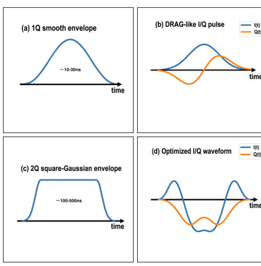
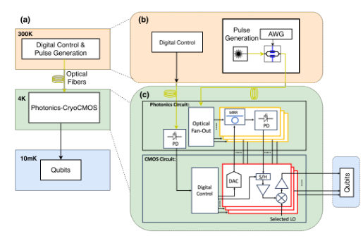
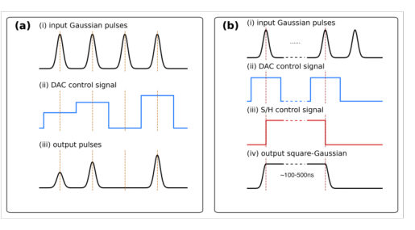
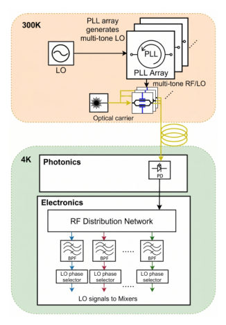

Summary. The paper introduces a novel hybrid photonic/CMOS controller architecture designed to overcome the severe scaling challenges in superconducting qubit control. By using optical fibers to distribute pulse templates and local 4 K CMOS circuits for fine-grained programming, it drastically reduces power consumption compared to fully sampled cryogenic electronics. The analysis confirms this approach is feasible by meeting stringent error budget requirements while maintaining programmability.
Why it may be interesting. This work directly addresses the physical engineering bottleneck of quantum computing hardware by proposing a scalable, low-power control interface that integrates photonics and cryogenics, which is crucial for building large-scale quantum processors.
Main problem. Scaling superconducting quantum computers requires a control hardware architecture that minimizes wiring density, cryogenic heat load, and controller-induced errors.
Main result. The proposed hybrid photonic/CMOS architecture successfully mitigates scaling bottlenecks by using optical links for shared pulse templates while retaining local 4 K programmability, achieving low power dissipation and error rates below the target threshold.
Method. The authors developed a template-based control framework, modeling power dissipation and gate errors using first-order approximations derived from comparing the proposed architecture against high-speed RF-AWG baselines.
Model / system. The system involves superconducting transmon qubits controlled by microwave pulses generated via an optical path (room T $ ightarrow$ 4 K) followed by local Cryo-CMOS processing. The error analysis is cross-checked using a three-level Transmon Hamiltonian simulation.
Key observables. Controller-induced gate fidelity ($\epsilon$), 4 K power dissipation ($\mu ext{W}/ ext{ch}$), and waveform storage requirements (bits).
Important parameters / regimes. Target operation fidelity of $99.9\%$ ($10^{-3}$ error budget); operating temperature range (mK to 4 K); pulse durations ($10-500 ext{ ns}$).
Assumptions / limitations. The analysis relies on first-order models for power and error, assuming feasibility of cryogenic components like MRRs and PDs; full device calibration is not performed.
Figures summary. Figures illustrate waveform examples (single/two-qubit gates), the optical multi-tone LO distribution path, and comparative plots showing power dissipation vs. RF-AWG baselines and error contributions vs. $10^{-3}$ budget.
Paper structure. The paper progresses by identifying scaling limitations, proposing the hybrid architecture to solve these limits (combining photonic links with local CMOS), quantifying feasibility through detailed power modeling against alternatives, and finally validating the approach via first-order error analysis cross-checked with numerical simulations.
Scaling superconducting quantum computers toward thousands of qubits remains a difficult control hardware problem. It requires hardware that reduces room-temperature to cryogenic wiring and cryogenic power while preserving in-fridge programmability for microwave pulse generation. This work develops a 4 K hybrid photonic/CMOS control architecture in which optical fibers distribute shared shaped pulse templates, while local cryogenic CMOS (Cryo-CMOS) circuits provide transmission control, amplitude programming, sample-and-hold envelope shaping, LO-tone and phase selection, and microwave upconversion, enabling both single-qubit and two-qubit gate generation within the same control path. Compared with fully Cryo-CMOS controllers, this architecture reduces per-channel active dissipation by moving high-speed sampled RF/IF waveform synthesis and waveform-memory access out of each cryogenic channel. Compared with purely photonic-link qubit-control approaches, it adds local 4 K programmability for pulse selection, amplitude scaling, timing updates, and LO-phase control, while remaining compatible with room-temperature real-time feedback and quantum error correction (QEC) workflows. We present architecture-level first-order models for 4 K power dissipation, waveform-memory scaling, and controller-induced fidelity limits, and cross-check the dominant fidelity terms using a three-level transmon simulation. The analysis shows that shared optical pulse template distribution with local 4 K envelope programming is a feasible path toward scalable superconducting qubit control.
Authors: Mingzhong Lu, Yu-Feng Song, Youjin Deng, Yuan-Yao He
Type: theory · Category: strongly correlated electrons · PDF: https://arxiv.org/pdf/2606.10976v1
Analysis basis: full PDF text, analyzed in chunks
Topic relevance: 🔥 analog quantum simulation 4/5 · non-equilibrium dynamics 1/5
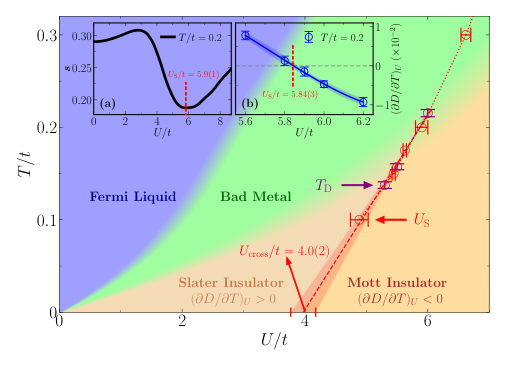
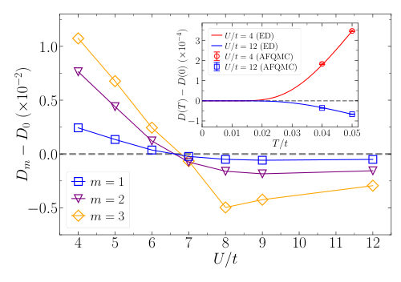
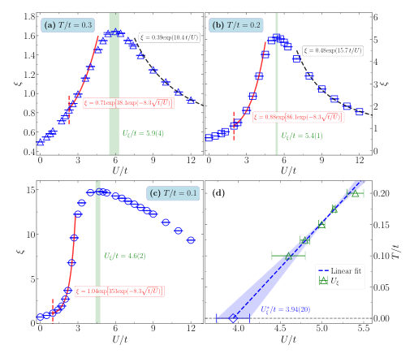
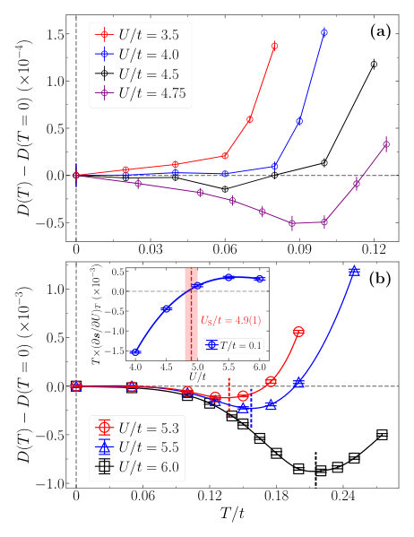
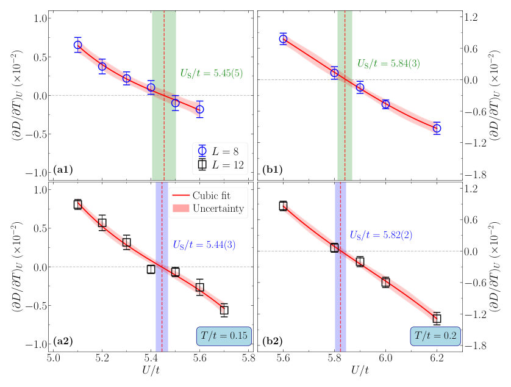
Summary. The paper establishes a definitive thermal signature—the sign change of the temperature derivative of double occupancy—to locate the Slater-Mott crossover in the Hubbard model. Using advanced Quantum Monte Carlo simulations, they determine this critical ratio to be $U_{ ext{cross}}/t \approx 4.0$. This provides a direct, measurable framework for experimentalists studying strongly correlated electron systems.
Why it may be interesting. This work provides a highly quantitative and experimentally accessible diagnostic tool ($\partial D/\partial T$) to probe fundamental many-body physics transitions relevant to ultracold atoms trapped in optical lattices.
Main problem. The study aims to quantitatively characterize the crossover between a Slater insulator (weak coupling) and a Mott insulator (strong coupling) in the Hubbard model.
Main result. A clear, measurable thermal criterion based on the sign change of $(\partial D/\partial T)_U$ is established, determining the crossover boundary at $U_{ ext{cross}}/t = 4.0(2)$.
Method. The research employs advanced Quantum Monte Carlo simulations (AFQMC) and Exact Diagonalization (ED) to calculate thermal properties.
Model / system. The system is the half-filled two-dimensional Hubbard model on a square lattice, governed by the Hamiltonian $\hat{H} = \sum_{k\sigma} \varepsilon_k \hat{c}^\dagger_{k\sigma}\hat{c}_{k\sigma} + U \sum_i (\hat{n}_{i\uparrow}\hat{n}_{i\downarrow} - rac{1}{2}(\hat{n}_{i\uparrow} + \hat{n}_{i\downarrow}))$.
Key observables. Double occupancy ($D$), the temperature derivative of double occupancy $(\partial D/\partial T)_U$, thermal entropy density ($s(U)$), and antiferromagnetic correlation length ($\xi$).
Important parameters / regimes. $U/t$ ratio, Temperature $T/t$, Lattice dimension (2D).
Assumptions / limitations. The analysis relies on theoretical relations like the Maxwell relation connecting $\partial s/\partial U$ to $(\partial D/\partial T)_U$.
Figures summary. Figures illustrate the consistency of multiple methods—including entropy minimum, correlation length maximum, and the sign change of $(\partial D/\partial T)_U$—in locating the crossover boundary.
Paper structure. The paper systematically introduces the physical problem, develops a measurable thermal criterion using derivatives of double occupancy, validates this criterion against other signatures (entropy, $\xi$), and concludes by providing a direct experimental roadmap for identifying the crossover in optical lattices.
The interaction-driven crossover from a Slater insulator to a Mott insulator in the Néel-ordered ground state of the Hubbard model is a fundamental paradigm of strongly correlated electrons, yet its quantitative characterization has remained elusive. Here we establish a clear and experimentally accessible thermal criterion for this crossover via the sign change of the temperature derivative of double occupancy, $(\partial D/\partial T)_U$, near zero temperature. In the Slater regime, $(\partial D/\partial T)_U>0$ reflects the major role of charge fluctuations; in the Mott regime, the anomalous $(\partial D/\partial T)_U<0$, a manifestation of the Pomeranchuk effect, signals the dominance of low-energy spin superexchange physics. Using exact diagonalization and {\it numerically exact} quantum Monte Carlo simulations, we demonstrate that this criterion determines the crossover boundary at $U_{\rm cross}/t=4.0(2)$ for the half-filled two-dimensional Hubbard model. Furthermore, we obtain a consistent boundary independently from the maximum in the antiferromagnetic correlation length, which also arises from the superexchange physics. These two thermal signatures are theoretically unified through the local minimum of thermal entropy versus interaction $U$ at low temperatures. Our results offer a direct, measurable, and physically intuitive framework to identify the Slater-Mott crossover in optical lattice experiments.
Authors: Quansen Wang, Yuefan Wu, Doudou Wang, Genyuan Xu, Jiawei Liang, Qiang Zhang, Yongmin Li
Type: both · Category: other · PDF: https://arxiv.org/pdf/2606.10318v1
Analysis basis: full PDF text, analyzed in chunks
Topic relevance: correlated cavity matter 3/5 · driven-dissipative phase transition 3/5 · methods for driven-dissipative 3/5 · quantum optics experiment 3/5 · analog quantum simulation 2/5 · correlated / nonlocal dissipation 2/5 · non-equilibrium dynamics 2/5 · non-equilibrium universality 2/5 · Keldysh / 2PI / non-Gaussian methods 1/5 · Kondo & dissipative impurity 1/5 · QC/QI experiment 1/5 · measurement-induced transitions 1/5 · quantum measurements 1/5
Summary. The paper presents an optomechanical system using a Fabry-Perot cavity coupled to a mechanical resonator, demonstrating unprecedented control over the coupling regime. By manipulating the physical parameters of the mechanical element, the authors can continuously tune the ratio between dissipative and dispersive couplings across several orders of magnitude. This capability makes it a powerful tool for investigating quantum phenomena in massive mechanical resonators.
Why it may be interesting. This work provides a versatile, highly controllable platform for studying open quantum systems dynamics, allowing precise tuning between dissipation-dominated and dispersion-dominated regimes, which is crucial for ground state cooling research.
Main problem. The goal is to develop an optomechanical system capable of continuously tuning both dissipative and dispersive couplings to explore quantum effects.
Main result. The authors demonstrated the ability to tune the coupling ratio from dissipation-dominated ($ ext{ratio} > 1$) to dispersion-dominated ($ ext{ratio} < 1$) regimes using a single experimental platform.
Method. The study combines theoretical modeling using transfer matrices with experimental measurements on an optomechanical setup involving a Fabry-Perot cavity and a movable mechanical resonator.
Model / system. The physical system is an optomechanical device comprising a Fabry-Perot cavity coupled to a string mechanical resonator. The coupling strength is controlled by varying the resonator's diameter, material, and position relative to the cavity field.
Key observables. Dissipative coupling constant ($g_\gamma$), dispersive coupling constant ($g_\omega$), and their ratio ($ ext{ratio} = g_\gamma / g_\omega$).
Important parameters / regimes. The theoretical tuning range for the coupling ratio spans from 25 down to 0.02, covering over three orders of magnitude.
Assumptions / limitations. In the advanced analysis sections, assumptions include treating the MR interaction as a 'shadow effect' and approximating beam waists at different points along the cavity.
Figures summary. Figures illustrate the schematic setup for tunable coupling (Fig. 1), stability improvement using dual-cavity techniques (Fig. 2), measured trends of linewidth and frequency shift vs. position (Fig. 3), and calculated coupling strengths (Fig. 4).
Paper structure. The paper progresses from establishing the physical platform and theoretical framework (transfer matrices, coupling definitions) to presenting experimental results showing tunable regimes using different resonators, and finally detailing advanced analytical derivations for field propagation through dielectric media.
We demonstrate an optomechanical system with tunable dissipative and dispersive couplings using a Fabry-Perot cavity and a string mechanical resonator. By varying the diameter and material of the mechanical resonator, and the relative location between the mechanical resonator and the cavity, the relative strengths of dissipative and dispersive coupling could be tuned continuously from dissipation-dominated regime to dispersion-dominated regime. In our experiments, the dissipative-to-dispersive coupling ratios of 1.3 and 0.6 are achieved by using two different mechanical resonators, corresponding to a transition from dissipation-dominated to dispersion-dominated optomechanical system. Theoretically, the coupling ratio could be tuned from 25 to 0.02 by optimizing the mechanical resonator, spanning over three orders of magnitude. These two distinct coupling regimes are achieved with the same experimental platform. The capability to freely adjust the coupling ratio provides a versatile platform for exploring quantum effects of massive mechanical resonators and quantum-limited measurements.
Authors: Yuanjie Zhang, Jiaojiao Li, Zhihuang Luo
Type: both · Category: other · PDF: https://arxiv.org/pdf/2606.10865v1
Analysis basis: full PDF text, analyzed in chunks
Topic relevance: analog quantum simulation 3/5 · correlated / nonlocal dissipation 3/5 · driven-dissipative phase transition 3/5 · methods for driven-dissipative 3/5 · non-equilibrium universality 2/5 · quantum optics experiment 2/5 · Keldysh / 2PI / non-Gaussian methods 1/5 · Kondo & dissipative impurity 1/5 · Tavis-Cummings & cavity-many-emitter 1/5 · correlated cavity matter 1/5 · entanglement & information structure 1/5 · non-equilibrium dynamics 1/5
Summary. The paper proposes using a four-channel dissipative coupling model in an atomic system to achieve highly sensitive quantum sensing by exploiting high-order Exceptional Points (EPs). It demonstrates that fourth-order EPs offer superior sensitivity scaling compared to second-order EPs. Crucially, the work also analyzes the noise robustness trade-off, providing a comprehensive guide for realizing such sensors.
Why it may be interesting. This work directly applies advanced concepts from non-Hermitian physics (EPs) to a tangible AMO platform (cold atoms/EIT), providing quantitative metrics for sensing performance enhancement while also addressing the crucial issue of noise robustness, which is vital for experimental realization.
Main problem. The primary challenge is developing highly sensitive quantum sensing schemes by exploiting high-order Exceptional Points (EPs) in non-Hermitian systems while overcoming the experimental difficulty of tuning to isolated, extremely sensitive points.
Main result. The proposed four-channel dissipative coupling model supports fourth-order EPs over a broad parameter range, exhibiting significantly higher sensitivity enhancement compared to second-order EPs for small disturbances.
Method. The analysis involves deriving an effective Hamiltonian from the system's dynamics (governed by master equations) and calculating the eigenvalue splitting ($\Delta\lambda$) near EP crossings using perturbation theory.
Model / system. The model is a four-channel dissipative coupling system realized in a thermal atomic vapor cell using Electromagnetically Induced Transparency (EIT). The dynamics are governed by an effective Hamiltonian derived from the full master equation for ground-state coherences.
Key observables. Sensitivity enhancement factor ($S$), eigenvalue splittings ($\Delta\lambda \propto |\epsilon|^{1/4}$ vs. $|\epsilon|^{1/2}$), and relative error ($E_r$) near EPs.
Important parameters / regimes. Laser detunings ($\Delta_A, \Delta_B$), coupling strengths ($ u, \omega$), disturbance parameters ($\epsilon_{\Delta}, \epsilon_{v}$), and the order of the EP (second vs. fourth).
Assumptions / limitations. The analysis relies on adiabatic elimination of excited states in the EIT process; a later section notes that higher-order EPs are more susceptible to noise than second-order EPs.
Figures summary. Figures illustrate the schematic model, the hypersurfaces defining different EP orders (Fig. 2), the scaling of eigenvalue splittings ($\propto |\epsilon|^{1/4}$ vs. $\propto |\epsilon|^{1/2}$) (Fig. 3), and comparisons of sensitivity enhancement ($S$) and relative error ($E_r$) for both second- and fourth-order EPs (Figs. 4 & 6).
Paper structure. The paper first introduces the general non-Hermitian model and its Hamiltonian structure, then details the physical realization using a four-channel dissipative coupling in an atomic system via EIT. The core analysis compares the sensitivity scaling and robustness of fourth-order versus second-order EPs under external disturbances.
High-order exceptional points (EPs) emerging in non-Hermitian systems have attracted broad interest for their significantly enhanced sensitivity to perturbations. However, quantum sensing schemes based on high-order EPs remain scarce, due to the experimental challenge of fine-tuning the system to such an extremely sensitive isolated point. Here we propose a four-channel dissipative coupling model that supports both fourth-order exceptional surfaces and second-order exceptional volumes. This non-Hermitian model can be realized in a thermal atomic system, and its complex energy spectra can be determined via electromagnetically induced transparency spectroscopy. The proposed model exhibits a characteristic fourth-order response to multiple physical quantities such as the laser detuning and the distance between optical channels, significantly surpassing the response of second-order EPs. We further reveal the sensitivity-robustness trade-off under experimental noise. Our work opens a route toward high-performance sensing leveraging higher-order EPs.
Authors: Lu-Qi Yang, Yu-Meng Ren, Peng-Bo Li
Type: theory · Category: other · PDF: https://arxiv.org/pdf/2606.10984v1
Analysis basis: full PDF text, analyzed in chunks
Topic relevance: Tavis-Cummings & cavity-many-emitter 3/5 · correlated cavity matter 3/5 · Keldysh / 2PI / non-Gaussian methods 2/5 · analog quantum simulation 2/5 · driven-dissipative phase transition 2/5 · methods for driven-dissipative 2/5 · correlated / nonlocal dissipation 1/5 · entanglement & information structure 1/5 · exotic spin models in light-matter 1/5 · interference shaping light 1/5 · non-equilibrium dynamics 1/5 · non-equilibrium universality 1/5 · quantum measurements 1/5

Summary. The paper details a novel method for highly sensitive rotation sensing using a spinning cavity coupled to matter qubits. By leveraging the Sagnac effect, the angular velocity modifies the system's effective Hamiltonian in a direction-dependent (nonreciprocal) manner. This modification enhances quantum sensitivity by utilizing virtual excitations, allowing for differential readout schemes that surpass standard measurement limits.
Why it may be interesting. This work is highly relevant to AMO physics as it combines cavity quantum electrodynamics (QED) with advanced sensing techniques. The use of virtual excitations and directional control in a superconducting/optical resonator platform represents a cutting-edge approach for realizing high-precision measurements beyond standard linear response theory.
Main problem. The paper proposes a nonreciprocal quantum metrological scheme for estimating rotational angular velocity ($\Omega$) with high precision.
Main result. The rotation sensitivity is enhanced by exploiting virtual excitations generated through ultrastrong coupling, leading to an intrinsically nonreciprocal response contrast between opposite driving directions.
Method. The analysis uses theoretical techniques including the Schrieffer-Wolff transformation and Bogoliubov diagonalization to derive effective Hamiltonians and calculate the Quantum Fisher Information (QFI).
Model / system. The system is a hybrid light-matter platform: a spinning ring cavity coupled to a two-level system (TLS) and an auxiliary bosonic mode. The Sagnac effect converts $\Omega$ into a direction-dependent detuning that modifies the effective light-matter dressing.
Key observables. Quantum Fisher Information ($QFI(\Omega)$), lower-polariton spectral response ($\omega_{-}(\Omega)$), and bundle emission coincidence counting rates.
Important parameters / regimes. Angular velocity ($\Omega$), Sagnac-Fizeau shift ($\Delta F(\Omega)$), ultrastrong coupling regime, and the directionality parameter ($s=\pm 1$).
Assumptions / limitations. The analysis assumes operation in the dispersive regime ($|\Delta_{\pm}(\Omega)| \gg \lambda_{a\sigma}$) and utilizes approximations for QFI based on projecting onto the lower-polariton branch.
Figures summary. Figures illustrate the sensing chain ($\Omega o \Delta F(\Omega) o H_{ ext{eff}} o QFI$), showing $ ext{QFI}_{ ext{proxy}}$ landscapes that demonstrate distinct, nonreciprocal distributions for opposite drive directions (RD vs. LD).
Paper structure. The paper systematically derives the effective Hamiltonian using sequential transformations (Schrieffer-Wolff followed by Bogoliubov), calculates the resulting polariton eigenfrequencies and coupling strengths, quantifies sensitivity via QFI, and finally analyzes the nonreciprocal contrast achievable through differential readout.
Quantum sensing with high precision and sensitivity plays an important role in quantum technologies and quantum information processing. Here, we propose a nonreciprocal quantum metrological scheme for estimating rotational angular velocity in a hybrid light-matter platform, where the setup consists of a spinning ring cavity coupled to a two-level system and an auxiliary bosonic mode. Through the Sagnac effect, the angular velocity is converted into a direction-dependent detuning, which modifies the effective light-matter dressing of the hybrid system. As a result, the angular velocity is encoded not only into the renormalized hybrid-mode spectrum, but also into the virtual excitations generated by ultrastrong coupling. These virtual excitations modify the polaritonic frequency response to rotation and enhance the quantum Fisher information (QFI) associated with angular velocity estimation, without requiring direct extraction of virtual excitations. Moreover, since the Sagnac-Fizeau shift enters the virtual-transition energy denominators, the metrological response becomes intrinsically different for opposite driving directions, leading to a tunable nonreciprocal sensitivity contrast. In addition, we also discuss a readout scheme and show that bundle emission coincidence counting can serve as an auxiliary direction-dependent readout channel. Our results provide a route toward exploiting nonreciprocal light-matter dressing and virtual excitations as resources for quantum rotation sensing.
Authors: Rishav Chaudhuri, Sai Satyam Samal
Type: theory · Category: other · PDF: https://arxiv.org/pdf/2606.11147v1
Analysis basis: full PDF text, analyzed in chunks
Topic relevance: measurement-induced transitions 3/5 · methods for driven-dissipative 3/5 · quantum measurements 3/5 · Kondo & dissipative impurity 2/5 · entanglement & information structure 2/5 · non-equilibrium dynamics 2/5 · Keldysh / 2PI / non-Gaussian methods 1/5 · analog quantum simulation 1/5 · correlated / nonlocal dissipation 1/5 · driven-dissipative phase transition 1/5 · non-equilibrium universality 1/5
Summary. The paper investigates how coupling an extended mesoscopic collider to a qubit affects the measurable mutual statistics of incoming particles. By analyzing multiple theoretical benchmarks against measured probabilities, the authors rigorously prove that only one specific benchmark correctly extracts the true quantum statistical signature. This highlights the critical dependence of physical inference on the precise measurement protocol used in nanoscale quantum experiments.
Why it may be interesting. This work provides a rigorous theoretical framework for interpreting quantum transport measurements in nanoscale devices, showing how measurement choice (the 'benchmark') can fundamentally alter the inferred physical statistics, which is crucial knowledge for experimentalists using mesoscopic tools.
Main problem. The study aims to determine the correct diagnostic benchmark for extracting the mutual quantum statistics (bosonic vs. fermionic) of colliding particles when the scattering process is mediated by an extended mesoscopic collider coupled to a qubit.
Main result. Only a specific benchmark, $B_4 = S(11; |\psi angle)CWP(11)CW$, faithfully captures the true mutual statistics, as other choices yield spurious results. This confirms that the correct diagnostic tool depends intricately on the collider's geometry and coupling details.
Method. The analysis involves deriving scattering matrices ($S_{ ext{eff}}$) for single and two-particle wave packets in the presence of a qubit, calculating post-scattering density matrices ($ ho_{ ext{sys}}$), and systematically comparing multiple theoretical benchmarks ($B_1$ through $B_4$).
Model / system. The system is an extended mesoscopic collider (modeled with tunneling points separated by L) coupled to a two-level impurity qubit. Scattering processes are analyzed for incoming fermionic and bosonic wave packets.
Key observables. Mutual statistics (bunching/anti-bunching), single-particle transmission/reflection probabilities ($P(1 o 1)$, $P(1 o 2)$), and the two-particle probability difference, $P(11; |\psi angle)F - B_4$.
Important parameters / regimes. Orbital phase $\phi = kL$, qubit coupling parameters ($\eta_m, heta_m$), and the state of the post-selected qubit $|\psi angle$.
Assumptions / limitations. The analysis assumes that incoming particles interact only via statistical interaction (neglecting Coulomb interactions) and relies on approximations for calculating correlation terms in the continuum limit.
Figures summary. Figure 1 illustrates the three physical setups: point-like, extended, and qubit-coupled. Figure 2 plots differences between calculated probabilities and benchmarks ($B_1, B_2$) to demonstrate statistical transmutation.
Paper structure. The paper progresses by first establishing the effective scattering matrices for the coupled system (Eqs. 1-3), then calculating single-particle and two-particle probabilities dependent on the qubit state ($ ho_{ ext{sys}}$). The core of the work is a systematic comparison of multiple statistical benchmarks ($B_1$ to $B_4$) to isolate the physically meaningful signature.
Mesoscopic colliders provide an effective platform for probing the mutual statistics of quantum particles. Recent experiments have successfully extracted the mutual statistics of fermions, and more exotic anyons using quantum point contacts (QPCs). Coupling a point-like collider, such as a quantum point contact, to a two-level impurity or qubit can induce statistical transmutation of fermions, causing them to display boson-like bunching tendencies. Here, we extend the analysis to an extended collider. We investigate the scattering of two incoming fermionic and bosonic wave packets in the presence of post-selection on the impurity state, and systematically analyze the possible benchmarks used to characterize bunching and infer the underlying mutual statistics. We show that only a specific benchmark faithfully captures the mutual statistics of the colliding particles, while alternative choices can produce spurious statistical signatures. Hence, the correct benchmark for probing the quantum statistics depends on the intricate details of the mesoscopic collider.
Authors: S. A. Matveev
Type: theory · Category: statistical mechanics · PDF: https://arxiv.org/pdf/2606.10785v1
Analysis basis: full PDF text, analyzed in chunks
Topic relevance: Keldysh / 2PI / non-Gaussian methods 3/5 · methods for driven-dissipative 3/5 · analog quantum simulation 2/5 · correlated / nonlocal dissipation 2/5 · driven-dissipative phase transition 2/5 · non-equilibrium dynamics 2/5 · non-equilibrium universality 2/5 · Kondo & dissipative impurity 1/5 · entanglement & information structure 1/5 · scars & prethermalization 1/5
Summary. This review surveys advanced mathematical techniques, particularly generating functions, used to solve kinetic equations describing particle aggregation and fragmentation. It provides analytical solutions for several idealized physical models, establishing universal scaling behaviors like $s^{-3/2}$ decay in steady states. The work is crucial for understanding non-equilibrium dynamics in systems ranging from aerosols to planetary rings.
Why it may be interesting. While focused on classical kinetics, the rigorous mathematical techniques—solving complex nonlinear differential equations derived from conservation laws—are highly relevant to open quantum systems dynamics where master equations govern evolution.
Main problem. The paper reviews generating function techniques used to find exact analytical solutions for aggregation and fragmentation equations across various physical regimes.
Main result. It derives explicit closed-form solutions for specific discrete coagulation models and establishes universal asymptotic power-law decays ($s^{-3/2}$) in source-driven systems.
Method. The primary method involves using generating functions, Laplace transforms, and solving the resulting nonlinear differential equations derived from Smoluchowski-type kinetic equations.
Model / system. The models are aggregation and fragmentation processes (coagulation-fragmentation kinetics), described by master or rate equations for particle size distributions $n_s(t)$. These cover discrete, continuous, two-component, and source-driven systems.
Key observables. Concentration functions $n_s(t)$ or $n(v, t)$, total aggregate density $n(t)$, and steady-state power-law decay exponents.
Important parameters / regimes. Aggregation kernels ($K_{i,j}$), source terms ($P_s$), homogeneity index ($\lambda$), and system dimensionality (number of components).
Assumptions / limitations. The Smoluchowski equations assume spatial uniformity; exact analytical solutions are generally restricted to specific, simplified kernel forms or initial conditions.
Paper structure. The paper systematically reviews the mathematical framework by introducing generating functions for various kinetic models (discrete, continuous, multi-particle). It then presents derivations and explicit solutions for idealized cases before discussing general asymptotic behaviors and limitations.
In this work, we review and revisit the generating function techniques that provide exact analytical solutions for aggregation and fragmentation equations across several physical regimes including spontaneous and collisonal shattering. For discrete coagulation-fragmentation equations with size-independent rates under monodisperse initial conditions, we show the derivation of sevaral explicit closed-form solutions. We also briefly report the exact solutions for continuous, three-particle, $D$-particle collisions and two-component generalizations. Source-driven aggregation yields steady distributions featuring a universal $s^{-3/2}$ power-law decay and a cutoff mass scaling $s_{*} \sim t^{2}$.
Authors: Pedro Dornelas, Gerson J. Ferreira
Type: theory · Category: disordered systems and neural networks · PDF: https://arxiv.org/pdf/2606.10067v1
Analysis basis: full PDF text, analyzed in chunks
Topic relevance: non-equilibrium dynamics 3/5 · spintronics-quantum-optics interface 3/5 · Keldysh / 2PI / non-Gaussian methods 2/5 · driven-dissipative phase transition 2/5 · methods for driven-dissipative 2/5 · non-equilibrium universality 2/5 · Kondo & dissipative impurity 1/5 · analog quantum simulation 1/5 · correlated / nonlocal dissipation 1/5 · exotic spin models in light-matter 1/5 · scars & prethermalization 1/5
Summary. This paper analyzes the time evolution of spin-polarized electrons in a disordered Rashba 2DEG to reveal a 'jittery quantum boomerang effect.' The authors show that longitudinal motion transitions from WAL behavior toward Anderson localization, while transverse motion is forced back to zero by symmetry constraints. This work bridges concepts from SOC physics, disorder effects, and non-equilibrium dynamics.
Why it may be interesting. The study provides a detailed real-time picture of transport phenomena (WAL $ o$ localization) driven by SOC and disorder, offering insights into how symmetry dictates long-term quantum dynamics in mesoscopic systems.
Main problem. The study investigates the real-time dynamics of a spin-polarized wave packet in a disordered Rashba two-dimensional electron gas to identify a 'jittery quantum boomerang effect.'
Main result. The system exhibits distinct longitudinal and transverse return mechanisms: longitudinal motion shows a crossover from Weak Antilocalization (WAL) to Anderson localization, while transverse motion returns to zero due to symmetry constraints.
Method. The analysis combines numerical simulations using Chebyshev expansion with analytical derivations based on the quantum kinetic equation in both weak and strong disorder regimes.
Model / system. The model is a spin-polarized wave packet propagating in a disordered Rashba 2DEG, governed by a Hamiltonian including Rashba SOC and random on-site potentials. The dynamics are tracked via expectation values of position, momentum, and spin polarization.
Key observables. Time evolution of displacements ($\langle x(t) angle$, $\langle y(t) angle$), momentum ($\langle k_x(t) angle$), and spin components ($\langle \sigma_{x,y,z}(t) angle$).
Important parameters / regimes. Disorder strength ($W$), scattering time ($ au$), SOC strength ($\alpha$), and the weak-scattering limit.
Assumptions / limitations. The analysis relies on asymptotic constraints derived from Anderson localization for strong disorder, and approximations like the quasi-particle picture in the weak-disorder regime.
Figures summary. Figures illustrate k-space probability density evolution across different scattering regimes (weak vs. strong) and show time traces of displacements ($\langle x(t) angle$, $\langle y(t) angle$) demonstrating the boomerang effect.
Paper structure. The paper develops equations of motion for position, momentum, and spin in the weak-disorder limit using the quantum kinetic equation. It then analyzes the asymptotic behavior under strong disorder constraints to explain the full 'boomerang' reversal mechanism.
We study the dynamics of a spin-polarized wave packet in a disordered Rashba two-dimensional electron gas and identify a jittery quantum boomerang effect in which longitudinal and transverse motion return to the origin through fundamentally distinct mechanisms. Starting from an initial state with finite momentum along $x$ and spin polarized along $z$, we calculate the time evolution by combining a Chebyshev expansion of the time-evolution operator with a disorder ensemble average. In the weak-scattering regime, equations of motion derived from the quantum kinetic equation reproduce the numerical trends and show that impurity scattering acts as a viscous damping mechanism that suppresses the transient Zitterbewegung and drives the transverse displacement back to $y=0$ at long times. In contrast, the longitudinal dynamics show a Drude-like saturation at weak disorder. These results are consistent with the vanishing intrinsic spin Hall conductivity in the disordered Rashba model and with experimental observations of a transient intrinsic spin Hall effect in the time-domain. As disorder increases, the longitudinal dynamics evolve to a partial return toward the origin, which signals a transition from weak antilocalization to Anderson localization in 2D.
Authors: Jie Zhou, Xiao-Xue Zhang, Xi-Zheng Zhang
Type: theory · Category: other · PDF: https://arxiv.org/pdf/2606.10555v1
Analysis basis: full PDF text, analyzed in chunks
Topic relevance: driven-dissipative phase transition 3/5 · interference shaping light 3/5 · methods for driven-dissipative 3/5 · non-equilibrium dynamics 2/5 · non-equilibrium universality 2/5 · Keldysh / 2PI / non-Gaussian methods 1/5 · Kondo & dissipative impurity 1/5 · analog quantum simulation 1/5 · correlated / nonlocal dissipation 1/5 · correlated cavity matter 1/5
Summary. The authors present an exact Green-function theory to study microwave scattering in superconducting circuits coupled to SSH waveguides. By integrating out the waveguide structure, they reduce the problem to a manageable effective Hamiltonian. This allows for precise control over complex non-Hermitian phenomena, enabling the design of devices that exhibit tunable filtering or controlled amplification based on topological and internal circuit parameters.
Why it may be interesting. This work provides a powerful, unified theoretical tool for designing superconducting quantum devices by treating topological structures not just as passive elements, but as active components that reshape non-Hermitian dynamics.
Main problem. The paper develops an exact Green-function theory to analyze non-Hermitian single-microwave-photon scattering by finite superconducting circuits embedded within a structured Su–Schrieffer–Heeger (SSH) waveguide.
Main result. The framework unifies the analysis of various non-Hermitian phenomena, demonstrating how topological waveguides can be used to design complex microwave functionalities like tunable filtering and spectral separation of pole/zero responses.
Method. It employs an exact Green-function reduction technique to integrate out the extended SSH waveguide environment, resulting in a finite-dimensional effective non-Hermitian Hamiltonian for scattering analysis.
Model / system. The system consists of superconducting microwave circuits (Model I: flux-controlled two-qubit interferometer; Model II: mediator-assisted scatterer) coupled to an SSH superconducting waveguide reservoir. The physics is governed by the SSH Hamiltonian and subsequent effective Hamiltonians derived via Green's functions.
Key observables. Scattering amplitudes, exceptional-point diagnostics, coherent-perfect-absorption (CPA) conditions, lasing thresholds, transmission/reflection spectra, and singular values of the scattering matrix S(E).
Important parameters / regimes. Flux ($\phi$), dimerization parameter ($\delta$), gain/loss imbalance ($\eta$), and energy ($E$).
Assumptions / limitations. The analysis assumes coupling only to the central unit cell of the SSH waveguide, and relies on standard Green's function techniques for open quantum systems.
Figures summary. Figures illustrate schematics of Model I and Model II; spectra show how flux and dimerization control interference patterns (bright/dark branches); diagnostics map out near-EP regimes using singular values ($\sigma_{\min}, \sigma_{\max}$) in the presence of gain/loss imbalance ($\eta$).
Paper structure. The paper progresses by first establishing the general Green-function reduction method for open systems, then applying it to Model I (interferometer), and finally extending the analysis to Model II (mediator) to show enhanced spectral control over pole-like vs. zero-like scattering branches.
We formulate an exact Green-function theory for non-Hermitian single-microwave-photon scattering by finite superconducting circuit subsystems embedded in an SSH waveguide. The structured SSH environment is integrated out exactly and enters the local scattering problem as an energy-dependent matrix self-energy, reducing the full open system to a finite-dimensional effective non-Hermitian Hamiltonian. This reduction places scattering amplitudes, exceptional-point diagnostics, coherent-perfect-absorption conditions, and lasing thresholds within one unified framework. Within this approach we analyze two superconducting devices. A flux-controlled two-qubit interferometric scatterer exhibits a broad bright branch and a narrow quasi-dark branch whose interference is reshaped by the SSH environment and changes qualitatively across the two dimerizations. A mediator-assisted two-qubit scatterer generates an additional energy-dependent complex coupling, reorganizes the dressed spectrum, and produces clearer dimerization-sensitive transparency-versus-absorption windows together with a pronounced separation between zero-like and pole-like scattering branches. In the active regime, near-exceptional-point hybridization enhances the pole-dominated response while deepening the singular-value valley associated with near-coherent perfect absorption. These results show how structured topological waveguides can be used not only to host scattering, but also to design non-Hermitian superconducting microwave functionalities.
Authors: Kejun Liu
Type: theory · Category: other · PDF: https://arxiv.org/pdf/2606.10141v1
Analysis basis: full PDF text, analyzed in chunks
Topic relevance: driven-dissipative phase transition 3/5 · methods for driven-dissipative 3/5 · non-equilibrium universality 3/5 · Kondo & dissipative impurity 2/5 · non-equilibrium dynamics 2/5 · Keldysh / 2PI / non-Gaussian methods 1/5 · analog quantum simulation 1/5 · correlated / nonlocal dissipation 1/5
Summary. This theoretical paper analyzes the breakdown of causality in the t Hooft model by studying its meson two-point function under non-Hermitian deformation. It rigorously locates this singularity at an Exceptional Point ($\gamma_c$), predicting a universal signature: linear growth of the propagator norm exactly at $\gamma_c$. This provides the first analytically controlled instance of EP physics within a confining gauge theory.
Why it may be interesting. The rigorous analytical control over an EP singularity in a confining gauge theory is highly valuable. The universal signature (linear growth) provides a concrete diagnostic tool applicable across different physical systems, including those studied in AMO physics or quantum optics.
Main problem. The paper investigates the breakdown of analyticity (causality) in a quantum response function when the underlying system undergoes non-Hermitian deformations, specifically locating this breakdown at Exceptional Points (EPs).
Main result. They establish that the EP manifests as a square-root branch point ($ u=1/2$) in the resolvent, characterized by a linear growth of the propagator norm (Jordan secular law) exactly at the critical coupling $\gamma_c$.
Method. The analysis employs exact solvability techniques from the 't Hooft model, utilizing Jacobi continued fractions to find the EP threshold and analyzing the time evolution of the system's propagator norm.
Model / system. The study uses the exactly-solvable t Hooft model for 1+1D large-$N_c$ QCD. The core physics involves deforming the meson two-point function (resolvent) via a term analogous to an imaginary chemical potential, leading to non-Hermitian dynamics.
Key observables. The critical coupling $\gamma_c$, the branch point exponent $ u=1/2$, and the three-regime signature of the propagator norm ($ ext{bounded} o ext{linear growth} o ext{exponential}$).
Important parameters / regimes. The coupling constants $g^2 N_c$ determine the threshold $\gamma_c$; the exponent $ u=1/2$ is fixed by the Jordan form.
Assumptions / limitations. The analysis relies on the exact solvability of the 't Hooft model and its mapping to non-Hermitian Wannier-Stark ladders for physical analogy.
Figures summary. Figures illustrate finite-size scaling confirming $ u=1/2$, the convergence of $\gamma_c$ from Jacobi fractions, and the characteristic three-regime behavior of the propagator norm vs. coupling strength.
Paper structure. The paper first introduces the physical problem—analyticity breakdown in a confining theory via non-Hermitian deformation. It then develops the mathematical framework using the t Hooft model's resolvent, calculating $\gamma_c$ and $ u$. Finally, it details the observable consequences: the secular growth at $\gamma_c$ and the connection to other phenomena like the NHSE.
We use the exactly-solvable t Hooft model of 1+1D large-N_c QCD as a rigorous laboratory for the breakdown of analyticity of a causal response function, the meson two-point function. A PT-symmetric deformation i gamma(x-1/2) of the light-cone meson operator, the analogue of an imaginary chemical potential, drives the lowest two mesons to an exceptional point (EP) at gamma_c. Recasting the resolvent as a Jacobi continued fraction yields gamma_c in closed form: 2 pi g^2 N_c at the two-pole level, converging to 7.966 g^2 N_c by depth five -- an analytic, not numerical, threshold. The square-root exponent nu=1/2 is fixed by the 2x2 Jordan form and confirmed by finite-size scaling to N=1999. The breakdown has an unambiguous time-domain signature: the propagator norm is bounded for gamma < gamma_c, grows linearly at gamma_c (the Jordan secular law), and exponentially beyond -- observable, since the deformed operator is a non-Hermitian Wannier-Stark ladder, in photonic and topolectrical analogues. The threshold is locked to confinement, gamma_c propto g^2 N_c, and recurs as a uniform EP cascade; a second, non-reciprocal deformation yields an exactly-exponential non-Hermitian skin effect. This is the first analytically-controlled instance of exceptional-point analyticity breakdown in a confining gauge theory.
← Index · ← Previous · Next →